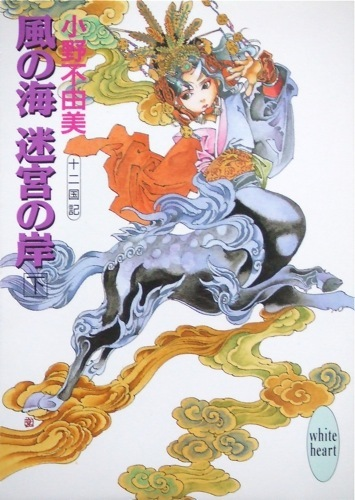
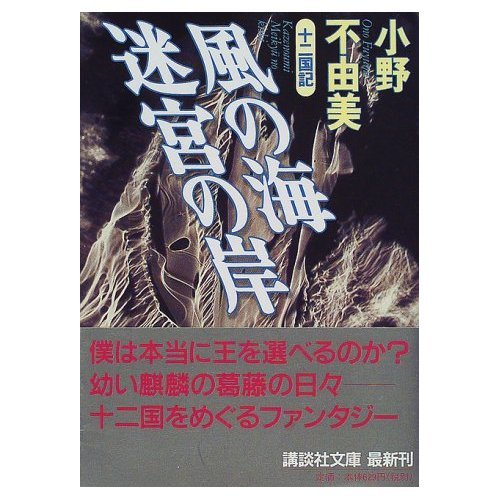

| [小野不由美] 十二国記シリーズ04 | |
| 小野不由美 | |
| (2015) | |
|
十二国記シリーズ 風の海 迷宮の岸(下)
小野不由美
|




|
風の海 迷宮の岸(下) 十二国記 |
七 章（承前）
１
「泰麒、本日は離宮までお出ましくださいませ」
ついに禎衛が言ったのは、夏至をいくらも過ぎないころだった。
とうとうその日が来たのだと、泰麒は朝餉の箸を置く。
「......はい」
朝、いつもより早くに起こされ、汕子が用意した着物も、いつになく豪華なものだったから、なんとなく覚悟はしていた。
蓉可が軽く背中を叩く。
「そんなに緊張なさることはありませんよ」
「蓉可も一緒に行くの？」
蓉可は微笑んだ。
「参ります。ずっとおそばにおりますから」
「汕子も？」
否定されることを予感しながら問うと、案に相違して禎衛はうなずいた。
「もちろんでございますよ。ただ、汕子は隠伏してまいります。姿は見えずとも、必ず間近におりますから」
泰麒は落胆の溜め息をついた。隠伏とは文字どおり姿を隠してひそんでしまうことだ。それでは手を握ってもらうことも、背中をなでてもらうこともできない。
「......はい」
進香の女仙と禎衛・蓉可をはじめとする十人ほどの女仙に囲まれて小道を歩き、蓬廬宮の果ての門の前で泰麒は足をとめた。
目の前で女仙が閂を外した。
門が開くまでに、泰麒は外に広がる荒涼とした迷路を思い出していたが、実際に門扉が開け放たれると外の様子は一変していた。
そびえた奇岩とそれが連なってつくる緑のうねり、奇岩の間に広がった草地。そこには色があふれている。天幕が張られ、無数の旗が立っていた。打たれた杭や垣、そこにつながれた馬や珍しい獣と、そこに干された馬具や掛け布。そして、種々多様な容姿、身なりの人間たち。
そこには忽然と町が現れていた。
思わずすくんだ泰麒の手を禎衛がとる。
「ものおじなさることはありません。気息を整えておっとり構えていらっしゃいませ」
泰麒は目線でうなずき、姿勢を伸ばして深い息をした。
禎衛に手を引かれて足を踏み出したとき、近くの天幕のそばに立っていた男が一行に気づいてその場に膝をついた。そこから波紋が広がるようにして、草原に散った人々がざわめきとともにその場に膝をついていく。
泰麒は禎衛の手をしっかり握って、前を行く女仙のかんざしが揺れるのを見すえて、無数の視線が薙いでいく苦痛をやり過ごした。
「......だいじょうぶですか？」
そっと後ろから蓉可が問うてきた。
「はい。......おしゃべりをしてもいいの？」
「かまいませんよ。とにかくお気楽になさいませ」
「うん」
思ったほど堅苦しい儀式ではないらしい。それを思って、泰麒はちょっと息を吐く。
「これが全部？」
この問いには禎衛が答えた。
「いいえ。供の者が半分以上おりますから」
「......よかった」
見渡すと、鎧を着た者が多かった。ずいぶん若い姿もあり、同時に老人の姿も見える。多くが男だが、女の姿も少なくない。
「ずいぶん女の人がいるね」
禎衛は笑う。いつものような笑顔ではなく、どこかなにかを控えたような笑顔だったから、禎衛も禎衛なりに緊張しているのだろうと思った。
「もちろんですとも。......泰麒は王と女王と、どちらにお仕えしたいですか？」
「わからない」
門から甫渡宮までは石畳が敷かれている。その両脇に大勢の大人が膝をついて首を垂れていた。それはひどく不自然なことに思われる。
「......どうしてみんな座っているの？」
「それが礼儀だからですよ」
禎衛はすでに、身分という言葉を泰麒がうまく理解できないのを呑みこんでいた。
「ぼくは挨拶しないでいいのかな」
「いまはいいんです。お話をするときに気になるようでしたら、お立ちなさいと言ってさしあげてください」
「話をしてもいいの？」
「進香のあとでなら。きっと珍しいお話がたくさん聞けますよ」
「......大きな獣がたくさんいる」
「妖獣です。みんなあれに乗ってきたんですよ」
「へぇ......」
トラのような獣がいて、ライオンのような獣がいて、馬や牛に似た獣がいる。
「妖獣も折伏するの？」
「妖獣は生け捕りますね。調教して馴らすんですよ。──さ、足元にお気をつけて。中に入ったら祭壇に一礼してくださいまし」
周囲を見回していた目線を正面に戻すと、甫渡宮が目の前だった。
蓬廬宮のほとんどの建物とはちがい、きちんと四方に壁がある。中に一歩入って、それで追ってくる視線が途切れて、泰麒はかなりのところホッとした。
中は天井の高い大きな広間がひとつきり、正面に祭壇がある。それは寺院の本堂に雰囲気が似ていた。
禎衛に言われるままに一礼し、祭壇の前まですすんで香をあげ、そうして祭壇の右手、壁沿いに設けられた一段高くなった場所へ連れていかれた。和室でいえば八畳くらいの壇上の奥は壁、三方には御簾が下がっている。いまは正面の御簾が上げられていて、壇上の奥にある椅子に座ると、甫渡宮の入り口から祭壇までが見渡せた。
そこからおとなしく女仙たちが進香を行うのをながめるうちに、また視線が絡んでくるのを感じた。見ると、宮の入り口に大勢の人間が集まっている。進香が終わって女仙のほとんどが壇上に上がってくると、御簾が下ろされて大きく息をついた。
「もうお楽になさってけっこうですよ」
禎衛は笑い混じりにいう。
「......たくさんの人に見られるのって、落ち着かないね」
「すぐにお慣れになりますよ」
「汕子を呼んじゃ、だめ？」
「御簾が下りているときなら」
禎衛に言われて、汕子、と呼ばわる。すぐ足元からするりと身を起こすように汕子が現れて、その豹の身体に腕をまわしてやっと落ちついた。ねぎらうように頭を抱えてくれる腕が温かい。
「よほど緊張してらしたんですね。そんなに堅くなる必要はないんですよ」
禎衛は苦笑混じりだった。
「......頭ではわかってるんだけど。──これからどうするの？」
「昇山した者が進香に入ってきます。かえるまでここでそれをながめていらっしゃっても結構ですが、退屈なら外においでになって昇山の者とお話しになっても結構ですよ」
禎衛がいっている間にも、宮に進香する者が入ってきた。最初のひとりが妙に堅いしぐさで祭壇の前に進み進香を行う。
「泰麒、王気は？」
禎衛に耳打ちされて、泰麒は首を横に振った。わからない、の意だったが、禎衛はちゃんと了解してくれたようだった。
「これから泰麒には、ここまでしばしばおいでいただかなければなりません」
「こうやって、王様がいるかどうか、調べるんだね」
「さようです。もしも王がおられたら、あたしたちに耳打ちしてくださいまし」
「......はい」
進香を終えた男が壇上の正面まで戻ってきた。一礼して壇の下で膝をついた男は、父親くらいの年代の男だった。相撲取りのように太っていて大きい。壇下の女仙と言葉を交わす彼の声を聞きながら、泰麒は懸命に意識を凝らす。天啓が──それがどういったものかはまだわからないが──ないかどうか。
禎衛が目線で問うてきたので首を横に振った。
天啓と思われる変事はなにひとつ起こらなかった。
２
泰麒はおとなしく進香をながめていたが、二日で飽きた。
四日目にようやく外に出る決心がついた。
進香は午前の短い時間だけに行われる。泰麒は壇上に座って、それをながめる。最初のうちこそ女仙ではない人間が珍しく、雑多な容姿や身なりをながめているだけで楽しかったが、すぐにただ座っているのが苦痛になった。
正午前には宮に帰ってもよかったが、ただ座っている時間の長いこと。
「......外に出てもいい？」
泰麒が聞くと、壇上の女仙は全員が嬉しそうにした。彼女たちもまた退屈していたのだろう。
「もちろんですとも」
蓉可は満面に笑みをたたえていた。
「ひょっとして、ぼくがそういうのを待ってた？」
「そうでもありませんけどね」
蓉可は笑う。
「ちょっと飽きていたのは事実です。なにしろ、今朝ももう六回は南瓜大夫の顔を見ましたから」
女仙たちは一斉に忍び笑いを漏らした。
進香の者のなかには、日に幾度となくやってくる者もあった。最初の日、一番めに入ってきた男がその代表で、毎日泰麒が戻るまでに十度は進香にやってくる。どこかの大夫らしいが、赤ら顔が丸くて南瓜に似ているというわけで、女仙たちによって密かに南瓜大夫の名を献上されていた。
「外に出てもだいじょうぶだと思う？」
禎衛も笑みを浮かべる。
「だいじょうぶですよ。あたしどももついておりますし、人も多い。いつぞやのような不心得者がおりましても、周りの者が先を争って助けてくれましょう。なにしろ誰もかれもが泰麒にいいところを見せたくてしようがないんですから」
蓬廬宮に忍び込もうとした愚者が、すでに十人ばかり蓬山の外に放り出されていたが、女仙の誰もそんなことを泰麒に知らせるつもりはなかった。
「......そう」
「取り囲まれて挨拶責めにされるでしょうけど、ここに座ってるほどの苦行じゃありません。ただ、早々にお言葉をかけてやらなければ、とんでもない長口上を聞かせられるはめになりますよ」
「言葉？ 話しかければいいの？」
「そうですね、もしも王がおられたら、古来のしきたりどおり、礼を」
「御前を離れず、詔命に背かず、忠誠を誓うと誓約する──？」
禎衛はうなずく。
「はい」
「もしも、王じゃなかったら？」
「いまは夏至、至日ですから、中日まで無事で、とおっしゃるのが慣例です。中日でしたら、至日まで無事で、と」
「次の安闔日まで無事で、ということだね」
「さようです」
「どちらか、わからなかったらどうしたらいいんだろう」
禎衛はさらに笑った。
「そんなことはございませんよ」
「汕子も一緒でいい？」
「隠伏してなら。ただし、広場ではけっして呼び出さないでくださいまし。馬や騎獣を脅しますから」
壇上の女仙は泰麒を取り囲む格好で、壇下の女仙の羨ましげな視線を浴びながら外に出た。壇の下に控えた女仙たちは、今日は一日そこにいて、進香をする者を見守り、昇山の者たちに対応しなければならないのだ。
昇山の季節は、玉座を願う人々にとってもひとつの大きな祭礼だったが、女仙にとってもまたひとつの祭りだった。
女仙であることを後悔することは少なくないが、寿命が長いだけ人生にも飽いている。夏至を越えて、どの女仙も身支度に時間をかけるのは、なにも威儀を考えてばかりのことでもない。昇山の男たちをすました顔でからかうのは無条件に楽しかったし、そうこうするうちに本気になって、下山する男と一緒に下っていく女仙もいたりするのだ。
せっかく表に出たと言うのに、真っ先に駆け寄ってきたのは、くだんの南瓜大夫だった。宮の近くに控えていたらしく、泰麒たちが宮から出るなりすさまじい形相で駆け寄ってくる。
地響きをたてて膝をつき、平伏する際に勢いあまって額を地に打ちつけたので、押し殺した失笑が女仙のみならず出遅れた人々の間からも漏れた。
「ほ......蓬山公にはご機嫌うるわしく」
声がうわずっているのがおかしい。
「わたくしは戴国垂州司馬、呂迫と申すもの、そっ......そもそも馬州南擁郷は──」
平伏したまま早口で、しかもつっかえ、とちりながら言われるので、泰麒には延々と続いた口上のほとんどが聞き取れなかった。
「──ご高顔を拝謁なるは、光栄至極。公の万歳を祈念いたします！」
泰麒が困って蓉可を見上げると、蓉可は眉を上げて泰麒を見た。瞳の色を読みとって、叩頭平伏した男に声をかける。
「......中日まで、ご無事で」
男はぱっと顔を上げ、巨体の肩を目に見えて落とした。
「......そう......そうか。......さようか」
つぶやいたまま悄然としている。蓉可が笑いを噛み殺しながら泰麒の背を押した。
「さ、そのあたりをめぐってごらんなさいませ」
押されるままに男を何度も降りかえりながら歩いた。少し離れたところで、女仙のひとりが泰麒にささやく。
「いつまでも口上を聞いておられたので、まさかと思いましたよ、泰麒」
「......口をはさむ隙がなかったの」
「ああ、よかった。泰麒の主があれでは、お世話した甲斐がありませんもの」
心底安堵した女仙の様子に、泰麒は首をかしげる。
「あの人では駄目なの？」
「天啓があれば、駄目もなにもありゃしませんけどね。ただ、仮にも王があんな南瓜では、戴国の威儀も地に落ちようってもんです。美丈夫である必要はありませんが、やはり見栄えがするにこしたことはなし。せめてもっとあかぬけた御人がようございますね」
「そんな......ものなんだ」
蓉可は笑う。
「真面目にお聞きにならないでくださいな。要は天啓の有無でございますから」
泰麒にそういった蓉可に、女仙たちが軽くくってかかった。
「あれ、蓉可。そうは言うが古今東西、醜い王が立った試しなどあるものか」
「そうそう。顔に品格が出るということだろう。王になるべきお方は、見かけも王に足る品格があるもんだ」
「衆目がございますよ」
蓉可が低くささやいて、ぴたりと女仙が静まった。
それを笑って見渡した蓉可は、泰麒に向かって身を屈める。
「軽はずみなさえずりをお気になさいませんよう。泰麒はただ天啓をお待ちになればよろしいのですよ」
「......うん」
３
大勢の人間に取り囲まれた。さまざまな口上を聞かされたが、泰麒自身にはなんの変事も起こらなかった。
昇山する者は主従あわせて三百余り、玉座を試すために訪れたのは主人だが、その従者にも機会は等しく与えられている。
泰麒を見つけるなり駆け寄ってくる者もあったが、もの言いたげな視線を向けてくるだけで、話しかけてこない者もあった。会話せずともそこに王がいればわかるものだと女仙に言われたけれど、天啓を示すものは訪れない。
話しかけられるにせよ、話しかけられないにせよ、いずれにしても期待に満ちた視線を裏切るのは同じようにつらかった。
人の切れ間に深い溜め息をつくと、蓉可がそれを聞きとがめて顔をのぞきこんできた。
「お疲れになりましたか？」
「ううん。でも、たくさんの人をいっぺんに見たから」
「午を過ぎましたから、甫渡宮に戻りましょうか？お休みになりたいでしょう。それとも、もう蓬廬宮にお帰りになりますか？」
「......うん」
泰麒はうなずいてなんとなく周囲を見渡し、視線をとめて蓉可の手を引いた。
「──蓉可。翼のある犬がいる」
ほど近い天幕の外に、馬に交じって巨大な犬がつながれている。数人の男女がその乗騎たちの世話をしていた。
「天馬でございますよ。そばに寄ってごらんになりますか？」
「かまわないと思う？」
「もちろんです」
言って、蓉可は泰麒の手を引き、その犬がつながれた天幕に近づいていく。
犬は大きく、白身に黒頭、短めの翼を背にたたんだ様子が美しかった。
「......これは、蓬山公。ご健勝そうでなによりでございます」
世話をしていた男女のうち、近づいてくる泰麒たちを認めてまっさきに膝をついたのは大柄な女だった。
「この天馬はそなたの乗騎ですか」
「さようでございます」
「公にお見せくださいましょうか」
「よろこんで」
女は笑って天馬のそば近くへ一行を促す。蓉可に押されておずおずと近づいてみると、天馬は見た目の印象よりさらにおおきな生き物だった。
「......大きいんですね」
泰麒がつぶやくと、あらためて天馬のそばに膝をついた女が答えた。乗騎の世話をしていた数人のうち、彼女が主人らしかった。
「これでも天馬にしては小柄なほうでございます」
「どうぞ、立ってください。──触ってもかまいませんか？」
「ありがとう存じます。──よろしければ、なでてやってくださいまし。とてもおとなしゅうございますから」
女に言われて、泰麒はちょっとためらいながら手を伸ばしてみる。つややかな毛並みは触れてみると見かけより硬い。首のあたりをなでてやると、天馬は心地よさそうに目を閉じた。
「本当におとなしいんですね。......名前はなんていうんですか？」
「これは飛燕と申します」
飛燕、と呼んでやると、目を閉じたまま手に耳の下をすりつけるようにする。
「噛んだりしませんか？」
「だいじょうぶでございますよ。もともと天馬は、妖獣にしてはたいへん気性のおとなしい獣でございますから。飛燕はとくに温和な性格ですし、噛んではいけない相手はちゃんと心得ているようです」
「えらいんですね」
泰麒はひとしきり女と天馬の話をした。どうやって手に入れたのか、どうやって飼うのか。騎乗した感じはどうなのか。
女の返答は明瞭だった。やわらかな声で、やわらかな言葉づかいで、それでも歯切れのよい返答は、どこか強いものを感じさせる。
実をいえば、泰麒にはまだ大人の年齢が見ただけでは判然としない。いくつぐらいの女なのかはわからなかったが、蓉可や禎衛の外見よりはずいぶん年上に見えた。
もっとも、ひょっとしたらそれは彼女の持つ雰囲気のせいかもしれない。女仙たちの持つ雰囲気とはあまりにへだたりがあるので、年齢まで離れているように感じられるのかもしれなかった。
女仙たちはおおむね、たおやかで華やいだ外見をしている。ことにいまは鮮やかな着物を着て、美しい髪飾りをしているのでなおさらそう見えた。
反対に女は渋い色の男物の服、赤茶の髪は結いもせずに垂らしただけで、装飾品はいっさい身につけていなかった。上背もあって、動作にもなよやかなところがどこにもない。きれいなひとだと思えたが、それは玉葉や女仙たちが感じさせるそれとは、ずいぶんちがった種類のものに見えた。
「......ありがとうございました」
泰麒はなごりおしく飛燕の首から手を放した。
「いいえ。飛燕も喜んでおりましょう」
「あなたはどちらからいらしたんですか？」
「わたしは承州からまいりました。承州師将軍李斎、姓名を劉紫と申します」
泰麒は少し目を丸くする。
一国には九州あって、州侯がそれを統治する。州侯にはそれぞれ掌握する軍があったが、これを州侯師、略して州師ともいった。軍の大きさは州の大きさによってちがい、二軍から四軍、したがって将軍もまた二人から四人しかいない。
「将軍でいらっしゃるんですか」
それでは、女仙とはずいぶん雰囲気がちがうはずだ。
「はい。およばずながら」
気持ちのいい人柄だったので、落胆させるのは少しつらい。それでもどう考えても天啓に相当しそうなものは泰麒を訪れなかった。
「......中日までご無事で」
李斎は少し自嘲するような笑みを浮かべたが、それだけだった。すぐに元の笑顔で一礼をする。
「ありがとう存じます。公もご健勝であられますよう」
「ありがとうございます」
他者を選別することはつらい。天啓が泰麒の好悪の情とはなんの関係もなさそうなだけに、いっそうなにやらせつなかった。
「あの......また飛燕に会いにきてもいいでしょうか」
李斎はこだわりなげに笑った。
「もちろんでございますとも」
４
喧嘩に行き合ったのは、天馬と別れてあたりを一周した、その帰りだった。
前方に人だかりができていた。なにごとだろうと、女仙たちがささやき交わしたところに、喧嘩だ、と声がする。とっさに泰麒は蓉可の裾にすがりついた。
それがどんな種類のものであれ、暴力はそうじて泰麒には恐ろしく感じられるのだ。それは血を恐れるのと同じ種類の恐怖だった。殴られる怖いのではない。殴るという行為自体が恐ろしく、同時にそれを行う人間が身がすくむほど怖い。
「なんの騒ぎです」
女仙が咎めるように声をかけると、こちらに気づいた者が膝をついた。
「あ......あの──」
蓬山の主は血を嫌い暴力を嫌う生き物だから、ここでの流血沙汰は絶対の法度である。理由いかんによっては蓬山の外に放り出されることもあった。
「ええい、これだから戴国の者は油断がならぬ。ほんに血の気が多いのだから」
言い捨てて女仙は人垣に向かう。
国によって、国民性の違いというべきものがある。戴国の民は気性が激しいので有名だった。本来ならその気質は泰麒の中にも流れているはずだが、なにごとにも例外というものはある。
「おやめなさい！ ここをどこだと思っているのです！」
女仙の声に人垣が割れた。
人垣の中心にいたのは二人の男だった。
一方は長剣をかざした巌のような巨漢、一方はそれよりは小柄な、それでも堂々たる体格の拳をかざした男だった。佩刀しているが、抜いていない。それでも一目で小柄なほうの優勢がわかる。
目を引いたのは小柄なほうだった。
黒い鎧と白い髪の対比。肌はよく日に焼けた褐色、上背が高く、体格も動作も恐ろしくしなやかで獰猛な獣のような印象を与えた。
人垣の中に駆けこんだ女仙が止めに入る間もなく、私闘は終わりを告げた。剣をかいくぐった拳が巨漢をしとめたのだ。
巨漢は土をかいたが、起き上がることができなかった。
男は倒れた巨漢を見やる。
「蓬山公の御在所ゆえ、剣は抜かぬ。公にお礼申しあげるがよい」
すこしも気負ったところのない動作、気負ったところのない声だった。
冷淡に言い捨てて振りかえった男と泰麒の視線が合った。
──その瞳の真紅。あたかも血のような。
思わず蓉可の裾を握ってさがった。泰麒は彼が恐ろしかったのだ。蓉可を引いてその場を逃げ出そうとするまえに、男のほうが近づいてきて膝をついた。
「いらっしゃるとは存知あげなかった」
目が和んで、少しだけ柔和な印象になる。それで泰麒はなんとかその場に踏みとどまることができた。それでも蓉可の衣を握った手に力がこもる。
「無作法をいたして申しわけない。どうかお許しを」
泰麒には返答ができなかった。代わりに蓉可が男に対峙する。
「蓬山で争いごとはお控えなさいませ」
「申しわけございません」
泰麒の身体にまわされた蓉可の手が、なだめるように動いた。軽く背中をなでて、やんわりと前に押しだそうとする。
「もうだいじょうぶですよ。喧嘩は終わりましたし、誰も怪我などしていません」
含めるように言われて、泰麒はうなずいた。本人を前にして、この男自体が怖いのだとはとうてい言えなかった。
膝をついた男は李斎よりもさらに年上に見える。無造作に束ねて低い位置でくくった髪は青みをおびた白銀、そのせいで年長に見えるだけかもしれなかった。端正な風貌の目元が怜悧で、まっすぐに向かってくる視線が射るほど強い。
男は薄く苦笑した。
「すっかり怯えさせ申しあげたようだ。お詫びいたします」
「いえ......」
ようやく声が出た。
「少し、驚いただけです。......どちらからいらしたんですか？」
「鴻基から参りました。わたしは戴国禁軍、乍将軍と」
周囲の人間から軽くどよめきが起こったので、有名な人物なのかもしれない。
禁軍は王直属の軍だった。必ず三軍で、これに首都州侯──これは必ず麒麟が任ぜられる──の三軍を加えて六師という。麒麟はその性質上、軍の指揮などできはしないから、実際には王が麒麟に代わってこれを掌握する。それで、六師を王師ともいった。
「名を綜。字を驍宗と申します」
まっすぐに見つめてくる視線が怖い。なにかを言わなくてはならないと、奇妙な強迫観念に捕らわれて、言わずもがなのことを口にした。
「......将軍でいらっしゃるんですね」
同じ将軍でも和やかな印象を与えるさきほどの李斎とはちがって、この男はどこまでも厳しい印象を与える。
それが驍宗と李斎の個性の差によるものか、それとも禁軍将軍と州侯師将軍という立場のちがいによるものなのかは泰麒には判然としなかった。
「はい。剣技よりほかにとりえもありませんゆえ」
口ではそういいながら、彼が自分のあらゆるものに自信を抱いているのがわかる。身がすくむほどの覇気。
一刻も早くこの場から逃げ出してしまいたかった。
これまでと同じように自分自身の様子をさぐり、どんな異変もないのを確認して、泰麒はひそかに蓉可の衣を引く。
「......中日までご無事で」
やっとそれだけを言って、視線を断ち切り、会釈をした。それで、彼がそのときどんな表情をしたのかはわからない。
軽いざわめきが周囲からまた起こった。
「乍ではなかったか」
誰かのその声で、彼が泰王に目されていたのだとわかった。
５
「──驍宗？ ああ、王師の乍将軍ですね」
問うたのはその翌日、問うた相手は前日に会った李斎という女将軍だった。
彼女は落胆など毛ほども見せず、再び飛燕に会いにいった泰麒を歓待してくれた。女仙が従者と話しこんでいる間、泰麒は李斎と飛燕のそばに座っている。
「李斎殿も将軍でしょう？ お知り合いですか？」
李斎はいいえ、と否定する。
「わたしは将軍といっても州侯軍の将軍。驍宗殿は王直属軍の将軍ですから身分がまるでちがいます」
州侯師の将軍と禁軍の将軍では、その身分に雲泥の差があるといってよかった。禁軍の将軍ならば王宮に昇って王に直接対面ができ、朝議にも参加して政治の一端を担うことができる。州侯軍の将軍が単なる軍人であるのに比べ、禁軍の将軍ともなれば、王の重臣であるといってよかった。
「では、有名な方なんですか？」
「ええ。たいそうな剣客でいらっしゃるから。軍兵の信望も篤い。直截苛烈だが礼を知り道を知る方だと聞いております」
言って李斎は泰麒を見返した。
「──驍宗殿に興味がおありですか？」
「......昨日、喧嘩に行き合って......」
ああ、と李斎はつぶやいた。
「どこかの命知らずが驍宗殿を怒らせたと聞きましたが、それですね。あれは相手のほうが悪い。ひどく驍宗殿を侮辱したと聞きました。そうでもなければ、たやすく私闘などなさる方ではありません」
「そうですか......」
李斎はまっすぐに泰麒を見る。
「驍宗殿が王ですか？」
泰麒はあわてて首を振った。
「そういうわけではないんです。ただ、とても怖い感じがしたので......」
李斎は意外なことに少し落胆したような表情を見せた。
「ああ......驍宗殿ではないのか......」
「昨日もそういう声を聞きました」
李斎は笑う。
「柔和な方ではなかろうが、怖い方でもないようですよ。立派な方だと思います。一軍一万二千五百の兵卒に、ことごとく尊崇されるのは並大抵のことではありませんから。敵も少なくはない方だが、味方にはこのうえなく慕われておられる。──それは、残念だな」
「李斎殿は驍宗殿の味方なんですね」
李斎はちょっと飛燕の毛並みをもてあそんだ。
「そう──お会いしたことはないが、尊敬申しあげておりますね。わたしも軍をあずかるものですから。驍宗殿が王なら納得できたと思います」
「そんなに強いひとなんですか？」
李斎はうなずいた。
「剣客といえば、一に延王、二に驍宗と言われます」
「へぇ......」
「驍宗殿に比肩する者がいないわけではありませんが、彼には人望が篤い。軍才と徳と、両方を備えるのは希なことです」
泰麒はうなずく。
（......けれど、彼には天啓がなかった......）
「残念なことです」
これは李斎の本音だった。
禁軍の乍将軍がどれほどの逸材だか、軍に関係するもので知らぬ者はない。彼が禁軍の将を拝領したのは、禁軍においては破格に若い頃だったし、反乱の討伐に向かった驍宗を討伐された当の民衆たちが誉めそやすのも耳にした。
単に強いだけの将、単に徳のあるだけの将なら他国にもいくらでもいるが、両方を備えて、なおかつそれが他国にまで鳴り響くほどの人物はめったにいない。
実際のところ、令坤門に駆けつけて、今回の昇山の者のなかに驍宗がいるという話を聞いたときに、自分が玉座につくことはあるまい、とそう思った。
温情ある将だ、よくできた人物だと周囲におだてられ、担ぎだされるようにして昇山したが、李斎とて己にたのむところがないわけではない。それでも、世間の風評を信じるかぎり、自分では驍宗にかなわないと、そう率直に思えるだけのものが彼にはあった。
「本当に、残念だ......」
李斎のつぶやきに、泰麒は迷いながら言ってみる。
「ぼくは、李斎殿が王様だったらよかったな、と思うんですけど......」
李斎は破顔した。
「これは名誉なことを言ってくださる。ありがとう存じます」
「本当にそう思うんです」
「そうおっしゃっていただけるのは光栄に存じますが、あまり簡単にお心を許されませんよう。公に取りいって出世栄達を願う輩かもしれませんよ」
悪戯っぽく見つめられて泰麒はきょとんとした。
「まさか」
「どうして、どうして。そういう輩も多いもの。昇山の者のなかには、はなから玉座は諦めて、これを機会に公や王とよしみを結ぼうとするものもおりますから」
「そんなものなんですか？」
「残念ながら。かくいうわたしも、公が戴国にお下りあそばしたのち、王師に召しあげてくだされと願う肚やもしれません」
泰麒は首をかしげた。
「李斎殿はそんな方ではありません。......と、思います」
李斎はさらに破顔した。
「公は本当に李斎が舞い上がるようなことを言ってくださる」
「そうでしょうか」
「そうですとも」
笑って李斎は腰を上げる。軽く衣服についた藁を払った。
「おつきの女仙方は話がはずんでおられるようです。──よろしかったら、李斎をお供に召しかかえて、そのあたりをお歩きになりませんか？」
八 章
１
「蓉可、外に出てきてもいい？」
甫渡宮に着くなり、そわそわときかれて、蓉可はほのかに笑った。
「どうぞ。また、李斎殿のところですか？」
「いけない......？」
「いいえ。李斎殿はよいお人柄のよう。仮にも将軍でいらっしゃるのだから、腕のほうも頼りになりますでしょう」
そう許可をもらい、交代で壇上に詰める女仙たちに囲まれて泰麒は宮を出た。
日が過ぎるにしたがって、女仙たちにも昇山の者のなかに顔見知りができてくる。ひとりふたりと立ちどまって話しこんでしまい、つき従う女仙の数が減ってゆく。蓉可さえもが李斎の天幕が見えるあたりで足を止めて、どこからの従者と立ち話を始めてしまったので、泰麒は残る距離を小走りに急いだ。
挨拶に捕まることは減ったが、なにやかやと話しかけてくる者は絶えない。彼らに捕まらずに済む一番の方法がとにかく急いでいくことだと学んでいた。
「李斎殿」
声をかけるより先に、李斎が天幕から出てきた。
「おいでなさいませ」
「来るのがわかった？」
「公がいらっしゃると、飛燕が嬉しそうに鳴きますから」
「本当に？」
「ええ。存外飛燕は、公が主だとおもっているのかもしれません」
「まさか」
「さあ、どうでしょう。妖獣は喋りませんから、直接聞いたわけではございませんが」
笑いながら李斎は飛燕の首を叩く。
「どうだ？ 飛燕？」
天馬はぷいとそっぽを向いて、泰麒の胸に頭をすりつけた。李斎が苦笑する。
「ほら。わたしの申しあげたとおりでしょう？」
飛燕の毛並みを梳かせてもらって、泰麒は李斎と午まで散歩に出る。
李斎は泰麒の質問にていねいに答えてくれて、珍しいものをいちいち示しては面倒がらずに解説してくれた。
知り合いにも紹介された。李斎が昇山してから親しくなった知人らしいが、その誰もが気持ちのいい人柄で、李斎とあたりを歩くのは無条件に楽しい。
「誰もかれも戴国の人なんですね。戴国以外の人はいないんでしょうか」
奇岩の根元に湧いた泉を取り囲むように広がった広場を歩きながら、泰麒が何気なく問うと、李斎は軽くふきだした。
「──もちろんです。戴国の王は、戴国の者と決まっていますから」
「え、そうなんですか？」
「ご存知なかったのですか？」
李斎は少々呆れ顔だった。
「ぼくはつい最近まで蓬莱で育ったので、あまりものを知らないんです」
ああ、と李斎はうなずく。
「そうでしたね。失礼を申しあげた。──王はその国出自の者、という決まりがあるんですよ」
「じゃあ、ここにいる人はみんな戴国から来たの？」
「そうとは限りませんけれど。生まれが戴国ならそれでいいそうですから」
「へぇ......」
李斎に手を引かれて歩きながら、泰麒はふと足を止めた。
「李斎殿、とてもきれいな獣がいる」
泰麒が見やった方向を降りかえって、李斎はうなずいた。
「ああ、騶虞ですね。──あれは見事だ」
それは虎によく似た生き物だった。すばらしく長い尾の先まで、不思議な五色に輝いて見える。天馬がどこか柔らかな印象を与える生き物であるのに比べ、それはあくまで猛々しく強い。
「騶虞は最高の騎獣ですよ。一国を一日で駆け抜ける」
「すごい」
女仙から、一国は馬でひと月の広さだと聞いていた。
「ええ。しかも主人によく馴れてとても利口です。勇猛で、戦場に連れるのにはこれ以上の獣はいない」
李斎は騶虞に近づいて見惚れるようにしている。
「──わたしも騶虞に会えるといいのですけど」
「騶虞がほしい？ 飛燕がいるのに？」
「欲しいですね。飛燕は馴れて可愛いけれど、性格が柔らかいぶん戦場に連れるのは不憫です。わたしは武将だから、どうしてもそれが優先になる」
「......そうですね」
「蓬山の帰りにうまく出会えるといいのですが」
「会えたら捕らえて連れて帰る？」
李斎は笑ってみせた。
「そのつもりです。公にお会いするのも楽しみでしたが、それも楽しみだったのですよ、実は」
「へぇ......」
「私財をありったけ投げ出せば購うこともできますが、買った妖獣は主を侮る。──いえ、そうでなくても、やはり騎獣ぐらいは自分の器量で捕らえたいもの」
「そうですね」
李斎は笑んでひとつうなずいてから、騶虞のつながれた天幕に声をかけた。
「失礼をつかまつる。表の騶虞の主はおいでか」
「──計都のことなら、わたしの乗騎だが」
突然かかった声は背後から聞こえた。李斎は驚きを顕にして振りかえる。どこか身構えるようなしぐさだった。
「......驍宗殿」
あの男だった。今日は鎧をつけていない。それでも佩刀するのは忘れていなかった。忘れようのない、氷の白髪と、紅玉の目。
李斎は泰麒と驍宗を一度だけ見くらべてから背筋を伸ばした。
「初におめもじつかまつります。わたしは──」
「承州師の李斎殿であろう」
驍宗は軽く笑う。対する李斎は軽く目を見開いた。
「なぜ」
「将軍はご高名であられるのをご存じないらしい」
「やっぱり」
思わず泰麒が口をはさんで、李斎も驍宗も泰麒を振りかえった。
「あ......、すみません」
驍宗は面白そうに泰麒をうながした。
「やはり？」
「いえ......。李斎殿なら、さぞかし立派な将軍なんだろうな、って。なんとなく、そう思っていたので......」
李斎は少し顔を赤くし驍宗を見る。
「公はわたしを買いかぶっていらっしゃるのです」
「なんの」
驍宗は笑う。
「公はお目が高い。そのとおりです。李斎殿は承州師にその人ありとうたわれるお方」
「お信じにならないでください、公」
李斎がいつになく照れているのがおかしい。
驍宗もその様子を見て、軽く笑う。実際そばにいて笑顔を見てしまえば、さほど恐ろしい人物とも思えなかった。
２
「して、計都にご用がおありは、李斎殿か、公か？」
驍宗は泰麒と李斎を見比べる。
「公がご覧になりたいと」
「公ならば計都にも異存はありますまい」
驍宗は騶虞を示した。
間近に寄ってみると、容姿よりもさらに印象的なのはその目だった。信じられないほど複雑で美しい色をしている。
「......あの、......この騶虞は驍宗殿が捕らえられたのですか？」
「ええ。騎獣を購うのは好きではないので」
「どうしてです？ 妖獣を捕らえるのは危険なのではないのですか？」
ふと驍宗の口角が上がった。泰麒はわずかに身をひいた。どこか太い笑みは、泰麒を意味もなくおじけづかせるものをもっている。
「野にあるものに枷をつけて騎獣にするのだから、こちらも相応の犠牲を払わねば不公平というものでしょう」
「......ええ......はい」
驍宗は計都をいとおしげになでる。もうあの怖い笑みは消えていた。
「これはわたしが捕らえて手懐けた。剣とこれとが、わたしの宝です」
李斎は驚いたようだった。
「ご自身で調教なさったのか？」
「なんとか。調教師が悪いゆえ、いっかなわたし以外には馴れぬ」
笑って言って、驍宗は泰麒見た。
「うかつに手をお出しになりますな。よくよく言い聞かせてはあるが、万が一ということがある」
「......はい」
「そういえば」
李斎は驍宗を見る。
「驍宗殿の剣は先の泰王から拝領されたとか」
「ええ」
「大層な名剣とうかがいました」
「さて、切れることは確かだが」
剣であるからには、飾りではない。──泰麒はそのことに思い至って身をすくめた。
驍宗は軍人だから、なにかを斬ってそれをうけとり、なにかを斬るためにそれを帯びているのだ。
「......やはり、お手柄で......？」
泰麒の問いに、驍宗は首を振る。
「軍功ではありません。以前、先王の御前で延帝に剣のお相手を願う機会があって」
「お勝ちになった？」
「負けました」
驍宗は屈託なく笑う。
「三本に一本しか取れなかった。先王はそれでも一本とったことを喜ばれて、剣を下してくだされたのです。──人を殺して戴いた剣ではない。ですから宝なのですよ」
「やはり延王がお強いのですね」
「無礼を承知で申しあげれば」
またあの、どこか泰麒をものおじさせる笑みが浮かんだ。
「わたしに五百年の寿命があれば、延王に後れはとりません」
言い放つ、苛烈なほどの自信。
軽口を叩いていればさほど怖いとも思えないのに、ときおり見せる表情が身をすくませるほど怖い。
「わたしも騶虞が欲しいのですが......」
計都を李斎は見やる。驍宗はあっさりと返した。
「よい狩場を知っている。お連れしよう」
「よろしいのですか」
「わたしもここでの用は終わった。あとは安闔日まで騶虞を探していようかと思っていたところ」
「計都をお持ちなのに？」
「もう一頭騶虞がいれば、計都を半分休ませてやれる。三頭はなくてもいいが、二頭は欲しいもの」
「お気持ちはわかりますが、狩場を秘密にしておられなくていいのですか？」
「そんなことをしても始まらぬ。欲しい者が行って捕らえてくればよい」
「狩り尽くされねばよろしいのですが」
驍宗は薄く笑った。
「なに、どうせ主になるだけの器量がなければ捕まらぬ」
驍宗と別れて、泰麒は深い息を吐いた。自分が実はひどく緊張していたのだと知る。
「どうなさいました」
「いえ......」
李斎は泰麒の顔をのぞきこむ。
「公はやはり驍宗殿が怖くていらっしゃるのですか？」
「李斎殿は平気なんですね」
「敵にまわせば怖い方だろうな、と思います。......そうですね、緊張させられる方ではある。正直なところを申しあげると」
「......やっぱり？」
「恐ろしいほど覇気のあるお方だ。犬だと信じて気安くしていたら、なにかのおりに実は狼だったと気づいてヒヤリとする、そういう感じがございますね」
それは泰麒の感覚をうまく表現しているような気がした。
「その感じはよくわかります」
李斎はつぶやいた。
「噂どおりの方のようだ。尋常な覇気ではない。......王でないのが惜しまれる」
「そうでしょうか」
泰麒には、驍宗はなにやら恐ろしすぎるように思われるのだが。
李斎はうなずいた。
「王というものは、人柄がよければそれでよいというものではありません。優しすぎる王は国を迷わせるし、おくゆかしい王は国を乱れさせる。......本当に驍宗殿ならばよかったのですが」
「李斎殿はそれでいいんですか？」
見上げた泰麒に応えて、李斎は苦笑した。
「驍宗殿に会って、のこのこと昇山した己が恥ずかしくなりました。──あの方はわたしなどとは器がちがう」
３
「どうやら今回の昇山のなかに、王はおられないようですね」
蓉可が言ったのは、夏至をひと月半も過ぎた頃だった。
夜、月は高く、かそけく虫の音がする。
「じゃあもう、明日は甫渡宮に行かなくていいの？」
蓉可は牀榻の中を調えながらうなずいた。
汕子は無言で泰麒に着がえをさせている。
「ええ。離宮の大扉は閉めさせましょう。それでもう誰にも望みのないことがわかりますからね」
「あとはどうすれば？」
「どうなりと。外へ遊びに行きたいのならば、どうぞ」
「いいの？」
「かまいませんよ。もう人目がございますからね。どうせ驍宗殿と李斎殿でしょう？あのおふた方がついておられれば心配ございません。汕子もついておりますし」
なんとなくあれ以来、驍宗とも必ず会っている。
李斎をたずねて飛燕と遊んでから驍宗をたずねる。それがいつの間にか習慣になっていた。
あいからわず時にヒヤリとすることがあるが、その感覚にもずいぶん慣れた。慣れてしまうと蓬山に男は珍しいから、会わないと物足りないような気がする。
「ええと......」
泰麒は上目づかいに蓉可を見る。
「明日は、李斎殿と驍宗殿は黄海に騶虞を探しに行くんだって」
蓉可は眉を上げた。
「──それで？」
「......ぼくも行っては......駄目だよね、やっぱり」
蓉可は部屋の隅に控えた禎衛と目を見交わし、それから息をついた。
「よろしゅうございます。──泰麒のおねだりはめったにあることでなし。ただしお怪我などなさって、あたくしどもの肝を冷やさせないでくださいましよ」
泰麒は破顔する。
「はいっ」
むしろ深夜に近いほどの早朝、泰麒は甫渡宮から李斎の天幕までを一気に駆ける。
あたりはまだ暗く、人の姿もほとんど見られなかったが、方々にある篝火のせいで広場は明るい。
「李斎殿！」
「──公」
すでにそこに鎧をつけて計都を引いた驍宗の姿も見えた。
飛燕に鞍をのせながら振りかえった李斎も初めて見る鎧姿、彼女は泰麒の後ろに女仙を見つけて軽く頭を下げる。
「行ってもいいんだそうです」
李斎は笑った。
「それはようございました」
「飛燕にのせてもらえますか？」
「もちろんですとも」
追いついてきた禎衛が端然と一礼をした。
「かけがえのない御身、くれぐれもよろしくお願いいたしますよ。李斎殿、驍宗殿」
李斎も驍宗も重々しく一礼を返す。
「おふたりを信じてお出しするのですから、万が一にも公に危険のございませんよう。お手数とは思いますが必ず午にはお帰しくださいませ」
「かしこまりました」
禎衛はうなずき、鞍の用意をされているのが天馬と騶虞だけなのを見てとる。
「随従はお連れにならないのですか」
「随従の馬では、午までに行って帰って参れません」
李斎が困ったように言うと、禎衛もまた眉をひそめた。
黄海は本当に危険な場所なのだ。五山は守護されているものの、黄海には無数の妖魔が住む。妖獣も捕らえて調教してしまえば主人のいうことをよくきいておとなしいが、野生のそれは、本来、人を襲う危険な生き物なのである。
しかも黄海には、妖魔以外にも無数の危険がある。流砂があり、瘴気をくゆらせる沼があり、落石の多い山がある。
「公には傷ひとつなくお帰しくださると、約束くださいましょうか」
李斎は深くうなずいた。
「お怪我をさせるようなことはけっして」
「我らがお供できればよいが、女仙は玄君の許可なく五山を下ることができぬ。危険な場所は困ります。狩りをなさるにも、公の安全を第一に考えてくださいますよう。血の汚れも困ります。──よろしいか」
「ええ......はい」
李斎は困惑した表情を浮かべる。禎衛はそれにかまわず、言葉を続けた。
「もしもやむをえず妖魔を斬ることがあれば、どちらご一方が公を連れてお逃げください。......たとえそれが一方を見捨てることになりましょうとも」
「......禎衛」
あまりのいいように、泰麒が軽く禎衛の裾を引っぱったときだった。
「我々は物見遊山に参るわけではない」
驍宗だった。顔にはあの苛烈なものが浮かんでいる。
「妖獣を狩るとなれば、黄海の縁ばかりを往くわけにはまいらぬ。多少の危険はないとは言わぬ。お守り申しあげる自信があればこそ、お誘いしたまで。そこまで重々の念のおしよう、いかな蓬山の女仙方とはいえ無礼に過ぎよう」
禎衛は驍宗を見すえる。
「......たいした自信じゃが、奢りでないと申せるかえ」
それを見返す驍宗の目のほうがいっそう烈しかった。
「たかが女仙にご心配いただくまでもない。公は我が戴国の麒麟。公のお身の安全を願うに、戴国の民以上のものがあってとお思いか。それこそ女仙方の奢りと思うが、いかが」
にらみあうことわずかののち、禎衛のほうが視線を逸らした。
「......確かに、おまかせいたしましたよ」
「しかと承りました」
踵を禎衛を見やって、驍宗は騶虞の手綱をとる。
「──日が昇ってしまう。参ろう、李斎殿」
４
天馬はすばらしく速かったが、ほとんど揺れを感じさせなかった。
岩を跳び伝い、平地を駆け、倒木をまたぎ越してもほとんど騎者に衝撃を感じさせない滑らかさは、とうてい動物の背にまたがっているとは思えない。泰麒はそれにひどく驚いた。
夜目もきくようで、岩や樹木が月光を遮る場所さえ、速度を落とすことなく駆けていく。
「......いかがですか？」
李斎にきかれて、背後から泰麒を抱えるようにして手綱を握っている李斎を振りかえった。
「まるで、麒麟みたいです」
李斎は目を丸くした。
「麒麟に騎乗したことがおありですか」
「ええ。......変ですか？」
李斎は苦笑する。
「おそれおおい経験をなさいましたね。──飛燕も麒麟と比べられては、さぞ恥ずかしゅうございましょう」
「そうなんですか」
「そうですとも。公はご自身が麒麟だから、麒麟を軽く考えておられるのでしょう。わたしなどは、麒麟にまたがるなど、考えただけで身がすくみます」
「へぇ......」
そんなものなのか、と泰麒は思う。確かに、景麒という人物の背中にまたがっているのだと思えば、とまどう気分もあったが、おそれおおいことだとは思わなかった。
「こうして同じ鞍にお乗せしているだけで、おそれおおい気がいたしますのに」
微笑う李斎の顔を見上げて、そんなものなのだろうか、と首をかしげる。
意見を求めてすぐそばを走る計都のほうを見ると、李斎と泰麒の会話など耳に入っている様子もなく峻厳な表情で前を見ている驍宗の横顔が目に入った。
まだ、あの怖いものが驍宗の周囲にただよっている。彼は禎衛の言葉によほど怒ってしまったのだろう。
天馬に揺られて高揚していた気分がすっとしぼんだ。
それは自分のせいだという思いがあったからだった。
飛燕と計都は黄海深く入りこみ、岩山を軽々と駆けぬけて五山の北、恒山の麓にまわりこんだ。
殺伐とした岩の隆起が連なる丘で、先をゆく驍宗が計都を止めて鞍を降りた。まだ空には月がある。
「──驍宗殿、ここですか？」
飛燕を止めた李斎の問いに、驍宗は無言でうなずいた。
泰麒は李斎に抱き降ろされながら、いっかな覇気の引かない驍宗の横顔を見る。
「あの......驍宗殿」
「どうされました」
驍宗の声音は突き放すような響きをしている。鞍に結んだ荷をほどきながら、泰麒を降りかえりもしなかった。
その背中に向けて泰麒は頭を下げる。
「さきほどは......女仙が失礼をしました」
驍宗は手を止めて、息を吐いた。ふと彼をとりまいた覇気が衰えた。
「......公がお詫びになることではない」
「いえ、あの......驍宗殿にも、李斎殿にも本当にごめんなさい」
李斎は岩陰のほどよい場所に焚き火の用意をしながら笑う。
「気になさることはありません。女仙が心配するのも当然のことなんですから」
「いえ」
行ってから泰麒は二人を見比べた。
「......ぼくは病気の麒麟なんです」
ふたつの視線が集まって、泰麒は赤くなる。
「それはもののたとえなんですけれど......」
泰麒はけんめいに言葉を探す。
「禎衛は、李斎殿や驍宗殿をあなどったわけではないんです。そうじゃなくて、ぼくがあんまり頼りないんで、心配なんだと思うんです」
李斎は柔らかく笑った。
「公はかけがえなのない方なのですから。そのようにご自分を軽くお考えになってはいけませんよ」
泰麒は首を振った。
「いいえ。──女仙が心配するのは、ぼくには麒麟らしいことがなにもできないからなんです。たぶん、そうなんだと思います。......ぼくは、使令を持っていないんです」
驍宗も李斎も目を見開いた。一瞬、互いの目を見交わす。
麒麟は血を忌むので、自ら武器を持ってほかと戦うことができない。それは相手が妖魔であれ、獣であれひとしく変わらなかった。
そんな麒麟を本人に代わって守護するのが使令で、麒麟は無数の使令を持っているものだというのが常識だった。使令がいないということは、身を守るすべがないことを意味する。
「それだけじゃなくて、ぼくは転変もできないんです」
これは驍宗と李斎をさらに驚かせた。
「本当なら使令をいっぱい持っていて、使令たちが守ってくれるはずなんですけど、ぼくにはそれができない。逃げるときだって麒麟になれれば逃げられるはずなんですけど、それができないから」
いたらない自分を告白するのは、少し恥ずかしい。泰麒は無意識のうちに身を縮めた。
「それで女仙たちは、とてもとても心配してしまうんです。なんとか治してくれようとして、慶国の台輔をわざわざ呼んでくれたぐらいなんですけど」
いたらない自分がどれほど周囲の人間の心を痛めさせているか。にもかかわらず、どれほど深い愛情を注いでもらっているか。──それを考えるとせつない。
「台輔も本当にいっしょうけんめい教えてくださったのに、ぜんぜん駄目だったんです。それで──」
驍宗が大きな手で軽く泰麒の頭を叩いた。
見上げると、柔らかな視線を向けられていた。ときにおじけづくほど怖い驍宗は、またときに呆然とするほど優しい顔をする。
「公の使令は、はなからあてにしておらぬ。ご心配めさるな」
「あの......女怪ならいるんですけど」
驍宗は微笑った。
「それは心強い」
大きな、景麒のそれよりいっそう大きな感触の手が頭をなでた。
「......はい」
５
「餌はなにを使うんですか？」
泰麒は罠をはっている李斎に問うた。
「玉です。騶虞は特に瑪瑙を好みます」
李斎は鶏の卵ほどもある瑪瑙を出してみせた。
「こ、こんなものまで食べるんですか？」
李斎は笑った。
「猫のマタタビと一緒です」
「へぇぇ......」
李斎は瑪瑙を泰麒の掌にのせて、驍宗を振りかえった。
「少し寄せ餌をまいておきましょう」
李斎は天馬に飛び乗る。
「寄せ餌？」
「瑪瑙の屑ですよ。──驍宗殿、公をお願いします」
「承った」
飛燕は大きく跳躍して、飛びたつ勢いで駆けていく。ようやく東の空がわずかに白む気配を見せていた。
狩りは夜中が最良なのだという。日が高くなれば妖獣はあまり出歩かなくなるらしい。まだ夜明け前とはいえ、けっして条件がよいとはいえないこんな時間に、ふたりが狩をするのはひとえに泰麒の安全を考えてのことである。
驍宗は岩の間に打った杭に縄をかけると、軽く手を叩いて立ち上がり、焚き火のそばの岩の上に長々と寝そべった計都のそばへ歩いていく。
「公、少し休まれぬか」
「はい」
驍宗は計都にもたれて、自分の脇を示す。それでおとなしく横に座った。
「捕まえられると思いますか？」
「さて。運次第だろうな」
「計都もここで捕まえたんでしょう？」
驍宗はうなずいた。
「安闔日のたびに通って、六度目だったか」
「大変でした？」
「正直を言えば。罠にかけてからが、てこずらせる」
複雑な形にめぐらされた鎖と縄がどういうふうに働くのだろう、と泰麒はしばらく想像をたくましくする。
「──公はわたしが怖いか？」
唐突にきかれ、泰麒は驚いて驍宗を見上げた。
「......いえ......あの」
「ときおり、しりごみなさるふうをお見せになる。ひょっとして死臭でも染みついていようか」
「そんなことはありません」
「では、わたしには麒麟をしりごみさせるものがあるのだな」
驍宗は薄く苦笑した。
「麒麟は仁の生き物だという。どうやらわたしには仁に厭われるものがあるらい」
「そんなことは......」
「武人ゆえ仕方がないか。仁とは遠い役目だから。......もしも公がわたしに欠けたものをご存じなら言ってはもらえまいか。自分のなにがいたらなかったのか、知っておきたい」
驍宗の声は静かなばかりだった。淡々と夜に溶けていく。泰麒は困惑した。
「......あの、そういうことではないと思うんです」
驍宗は問うような視線を向けた。
「ひょっとしたら、目の色が......血を連想させて怖いのかも......」
「気配りはありがたいが、それはあまりわたしに対して親切ではない」
静かに、それでも強く言われて驍宗の目を見返した。
「......うまく言えないんです」
「どんなことでも、かまわぬ」
「ぼくは、気が弱いんです。......きっとそうなんだと思うんです。覇気に乏しいとか、もっと自信を持つようにとか、女仙に言われるのですけど、どうしてもそういうふうなんです」
驍宗は無言で泰麒を見ている。
「驍宗殿はとても自信にあふれた方です。覇気、って実を言うとよくわからないんですけど、きっとあれを覇気っていうのだろう、って。そういう......気配みたいなものをときどき強く表されるんです。──ぼくの言っているの、わかりますか？」
驍宗はうなずいた。
「それでとても気後れがしてしまうんです。羨ましいのとはちょっとちがって」
泰麒は計都のそばの焚き火を見つめる。
「......火って、暖かくて明るいものですけど、あんまり強いと怖いでしょう？そんなふうにすくんでしまうんです。......たぶんそういうことなんだと思います」
自分でも自分の恐れがうまく理解できない。
「自分が情けなくなるわけじゃないんですけど、乱暴そうで怖いとか、そういう感じとも違います。血を見たときに怖いのとも、少しちがう──」
言葉を探しても、見つけた言葉はどれも正しいとは思えない。もどかしくてもどかしくて、泣きたい気分になった。
「嫌な感じじゃないんです。大きな火は怖いですけど、きれいだなとかすごいな、って思うでしょう？それと一緒なんです。すごいなって、思うんですけど、それと同時になんだかすくんでしまって、それで」
ぽんと掌が頭に置かれた。
「お泣きになるな」
「すみません......」
「わたしこそ、詮無いことをおききしてしまった。申しわけない」
「いえ......」
驍宗は柔らかく笑って、泰麒の髪をなでつけた。
「公はよいお子だな」
「いいえ......そんな......」
「誠実でお優しい方だ。戴国はよい国になろう」
「そうでしょうか」
驍宗はうなずいて、髪をなでた腕を肩にまわしてそのまま焚き火に目を向けた。
それきりなにも言わなかったので、計都にもたれる代わりに驍宗にもたれて、泰麒もまた黙りこんでいた。
九 章
１
「驍宗殿！」
火の粉を散らして松明の明かりが岩場に駆けてくる。李斎を乗せた飛燕が戻ってきた。東の空がようやく白みはじめようとしている。
「驍宗殿、妙な穴を見つけましたが」
「──ほう？」
驍宗は立ち上がった。
「少し離れた沼地の近くです。出入りした足跡がありましたが、それが騶虞のものではないかと」
「巣穴かな」
「やもしれません」
「行ってみよう」
李斎は泰麒を抱えあげる。飛燕に乗せた。驍宗もまた計都に騎乗した。
その穴は岩山の切れ間、暗い色の水とも泥ともつかぬものをたたえた沼地のほとりにあった。水際からずいぶんと離れたところ、わびしいばかりの草がもうしわけ程度に生えた地面に口を開いている。
降り立ってみると松明の明かりに、穴へ向けて幾条かの足跡が続いているのが見つかった。
驍宗は計都を止める。たったいま計都が残したばかりの足跡を比べてみると、騶虞よりも大きな生き物のようだった。
「騶虞ではないかもしれぬ。──なんだろう」
李斎は飛燕を降りて、穴の入り口をのぞきこんだ。
大きな石が組み合ってできた穴の入り口は、李斎の背丈ほどもあった。穴というよりは岩と岩とが噛み合って、その隙間が作った隧道というべきだろう。
隧道は少し行った先で曲がっているので奥は見えない。
「さきほど少し踏みこんでみましたが、そうとう奥が深そうです。──入ってみますか？」
「龍が出るやもしれぬぞ」
「そういえば、黄海のそこにも龍宮があるとか」
驍宗もまた穴の奥をのぞきこむ。
「そう言うが、さてな」
「黄海の底に向かうにしては少し小さいようですね」
「......さて、どうしたものか」
李斎は少し怪訝そうにした。
「入ってみないのですか？」
驍宗は返答する代わりに泰麒を見る。
「どうなさる？」
「あの......わかりません」
「では、少々中をのぞいてみるか」
李斎はすでに中へ踏みこんでいた。
「先に参ります。驍宗殿には公をお願いいたします」
「わかった」
泰麒は軽い不安に捕らわれる。驍宗を見上げた。
「ええと......」
「怖いか？」
首を横に振ろうとしてやめた。泰麒は正直に言った。
「......少し」
「──どうなされました？」
李斎はすでに曲がり角にかかっている。
「いま、行く。──公、わたしから離れぬよう」
「はい......」
それは岩山の下を貫いているように思われた。少しずつ下りながら紆余曲折を繰り返していく。風はないが、炎が揺れる。空気が通っている証拠だった。枝道と呼べるほどの枝道もなかった。
「......長いな」
驍宗の声はこだまする。先を行く李斎が足を止めた。
「行き止まりです」
示した先は小さな広場になっている。歩いてきた隧道の床とは泰麒の背丈ほどの段差があった。
李斎は段差を飛び下り、岩の起伏が積み重なった広場を見まわした。
「......変だな、なにもいない」
「いないはずがない。かすかになにかの臭気がする」
泰麒は眉をひそめた。驍宗の言うとおり、なにかの臭いがする。
それはひどく嫌な臭気だった。なにやら胸騒ぎを誘う臭い。
李斎は広場の床面をなす岩を上り下りして、斜めに突き出た平らな岩のそばで身をかがめた。後ろ姿が一歩ずつ遠ざかるのが、泰麒にはひどく不安な気がした。
「ああ、さらに下る穴がある」
「それか」
驍宗は泰麒を抱きあげて段差を飛び下りる。ひとつ岩を上がると、李斎がのぞきこんだ穴が見えた。
──その、暗い穴。
「なにか......いる」
泰麒はつぶやいた。
「──え？」
驍宗も李斎も泰麒を振りかえる。足元から震えがたちのぼってくるのを泰麒は感じた。鼓動が速まる。ひどい胸騒ぎがする。
「......戻りましょう。そこは、よくない」
「どうなさった？」
泰麒は驍宗の手を引く。李斎に向けてもう一方の手を伸ばした。
「そこは嫌です」
李斎は驍宗と目を見交わし、それから笑って穴の縁に手をかける。
「中がどうなっているか、確かめるだけ」
「いいえ。──いいえ、だめです」
泰麒は李斎を止めに駆け寄ろうとしたが、足を踏み出した刹那、岩の間からなにかが現れて前を遮った。
「──行ってはいけません」
「汕子！」
驍宗は唐突に現れた人妖の姿に、とっさに柄に手をかけたが、ほかならぬ泰麒がその人妖に抱きついたので力を抜いた。ではこれが、泰麒の言っていた女怪なのかと納得する。
李斎も驚いて、出現した白い人妖に目を見張っていた。岩に手をかけたまま半身を泰麒のほうへ向けた、その李斎の腕に突然なにかが巻きついたのはその時だった。
李斎は声をあげなかった。悲鳴をあげたのは驍宗の間近にいる子供のほうだった。
「──李斎！」
驚いた表情のまま、李斎の身体は頭から穴の中に引きずり込まれた。あがく脚が一瞬目の中に焼きついて、我に返ったときにはすでに李斎の姿はない。
「──李斎──！！」
泰麒の声に応えるように、穴の奥から悲鳴が響いた。
２
驍宗は岩場を駆ける。李斎が呑まれた穴まで駆け寄った。
その暗い穴は下へ下っている。かなりの段差がありそうだった。
「驍宗殿！」
「汕子とやら、公を連れて逃げよ。計都に乗って蓬山に帰れ」
汕子はうなずいたが、泰麒はすでに驍宗のほうへ駆けだしていた。
「泰麒、いけません！」
走る子供を、汕子は跳躍して抱きとめる。
「だって、李斎殿が！」
穴を示した泰麒を驍宗は目線で止めた。
「李斎のことは、わたしに任されよ。公は外へ」
「できません！」
驍宗は泰麒の声には返答せず、穴の底へ飛び下りた。泰麒は汕子の腕をかいくぐる。
「泰麒！」
泰麒は転がる勢いでその穴に駆けつける。伸ばされた汕子の手を払って、委細かまわず穴の中に飛びこんだ。
──断固として、驍宗だけには行かせられない。
かなりの落差があったが、先回りした汕子が麒麟を受け止めた。
「──泰麒」
「だめ！ 逃げない！！」
汕子は思わず泰麒の身体にかけようとした手を引く。なぜかその声に逆らえなかった。
──どうしたこと。
汕子は一瞬、状況を忘れて自分の手を見た。
泰麒は汕子の主人だが、いまはなによりも泰麒自身の安全が優先する。泰麒を連れてこの危険な──危険の正体は不明だが──場所から逃げなければ。多少泰麒のいいつけを無視しても、多少乱暴な手段をとっても。
そう思うのに、泰麒をおしとどめた腕は、かるがるとかいくぐられてしまった。いまも、思わず手を引いてしまった。
──なぜ。
泰麒には、そんな汕子にかまう余裕はなかった。
穴の底はまるで鍾乳洞のような広い空洞になっていた。明かりは驍宗の持ちこんだ松明だけ、床に放り出されたその光では穴の奥行きは計り知れない。
すぐ前に抜刀した驍宗の背中が見えた。そしてその足元、いくらもはなれていないところに倒れた李斎。
さらにそれから、李斎に覆い被さるようにした、巨大な闇。
それは闇の塊のように見えた。鎌首を持ち上げるようにして掲げられた闇の一部が、まっすぐに李斎を狙っていた。
「──饕餮！！」
それは汕子の悲鳴だった。
──なんということ。
汕子はまじまじと妖魔を凝視する。それを単なる妖魔と呼んでいいものか。非常識なほどの力と、ほとんどその姿を見られぬゆえに、すでに伝説の一部だとさえ信じられている妖。汕子には守りきれない。──この世の誰だろうと、饕餮に対峙して、なにかを守りおおせるとは思えない。
李斎が顔だけをあげた。
「──公、逃げて！！」
「できません！」
叫んだ泰麒を驍宗が突く。
「公は戴国に必要な方。ここで死んではならない！」
「ぼくだけ逃げるなんて、できません！」
悲鳴があがった。
振り下ろされた鎌首が李斎を打ちすえて、さらにそのまま驍宗を襲う。
横に飛んで倒れた驍宗の頭上を掻いて、さらに大きく振りあげられた。
──止めなくては。あの恐ろしい凶器を止めなくては。
（どうやって？）
考えるより先に身体が動いた。
──剣印抜刀。
「臨兵闘者皆陳烈前行──！！」
（止めるだけなら）
影がぴたりと動きを止めた。
（それから......どうするんだったか）
叩歯。──これは震えでままならない。
闇の一部が振りかえった。低い位置に松明の火を照り返す二つの目がある。
視線が合った。──合ってしまった。
「......逃げてください」
その双眸をにらみ返したまま。いったいどれだけ持ちこたえられるか。
「汕子、李斎殿を」
「──泰麒」
「李斎を連れていって！」
──まただ、と汕子は歯噛みをする。
泰麒の言葉に逆らうことができない。
汕子は倒れた李斎に駆け寄った。
血に濡れた身体を抱えあげて駆け戻り、泰麒に一瞥をくれて穴の外に飛び出していった。
「......驍宗殿も。いまのうちに、逃げてください」
倒れた驍宗は視野の中にいない。怪我はないのか、確かめる余裕さえなかった。
淀んだ血の塊りのような、ふたつの目を見返す。
「お願いです......！」
低い声で返答があった。
「できぬ」
もう一度懇願するゆとりが、泰麒にはなかった。
視線が圧力を持つものであることを、初めて知った。
押し寄せる力と、押し戻す力と。
ふたつの力が充満して空洞の中の時間が凍結した。
３
（汗が......）
ふたつの目を見据えたまま、もうどれだけの時間が経ったのかわからない。
額が流れた汗が鼻梁に沿ってながれていく、その感触。
ただひたすら浅い息を繰り返して。
（......額）
眉間がいつからか疼く。熱い堅いものがそこに埋めこまれている。
疼痛を訴える場所から落ちていくのは、本当に汗だろうか。
（もう、目が）
視力はとうに失っている。
押し寄せてくる力をたよりに相手の目があるはずの場所を見据えているだけ。
その力の方向を探る術さえ失われようとしている。
（時間は......）
どれだけの時間が経った。
泰麒はさっきからそれを無意識のうちに気にしている。
（あと......どのくらい）
なぜそれがきになるのかは、わからない。
ふいに抵抗を感じた。
まっすぐに前に向かっていた力が、なにかに遮られるような感触。あるいは粘りつくような感触。
（時間......）
なぜ時間が気になるのか。
さらに抵抗が増して、泰麒は目を見開いた。
なぜなのかを悟った。
それがわかった瞬間、額に亀裂が入った気がした。吸った息が鼻梁の奥から喉を焼く。
饕餮の視線がゆらいだ。粘りが増す。力がうまく相手の力を押し戻せない。惧れた瞬間がやってくる。
──生気が死気に転じるのだ。
「驍宗殿......」
驍宗はいるのか、いないのか。いるとするならどこにいるのか。
「逃げてください......」
きっともう、いくにらももちこたえられない。
静かな声が背後から聞こえた。
「......おそれながら、できません。足が動きません」
小さな麒麟は目を見開いた。
気が逸れる。
──まさに死気に転ずる一瞬。
「傷を負いました。動けません。──お助けください！」
萎えたに見えた覇気が一瞬のうちに再燃した。
以前よりもずっと危うい均衡で、その場の力は膠着した。
（......汗）
額を伝い落ちていくもの。
（ほかに......方法がない）
驍宗の気配を感じる。身動きひとつなく、それでも自分に注がれている視線。
（捕らえるしか、ない）
驍宗は動けない。泰麒もまた、動くことはできない。
（下れ......）
初めて念じた。
（使令に下れ......）
ふいに闇が身動きをした。──その気配を感じた。
押し寄せてくる力がゆるんだ。
生まれる、わずかな余裕。
（使令に、下れ）
さらに相手の力が弱まった。
瞬きをする余裕。同時に汗で濁った視野が澄む。
凶器を振り上げたまま硬直した相手の姿が見えた。
強い力を放つ双眸はそのまま、闇は形を変え始めた。
それは震え、萎縮し、巨大な空洞を満たすほど巨大な鬼に転じた。
恐怖は感じなかった。さらに余裕が生まれた。金属で固めたように張り詰めた自分の四肢をようやく意識した。
「下れ......」
闇はさらに凝縮するようにして、あまりに大きな牛の姿へ。
さらに、虎へ。
さらに、大鷲へ。
さらに、大蛇へ。
千変万化。──その尋常でない力の証。
やがて目の前に端座した小型の犬が姿を現した。
「......使令に下れ......」
大天井を指した手で天を受ける。
ふと、視線を押し戻してくる力が失せた。抵抗を失ってなにかがまっすぐに駆けていく。天を受けた掌から巨大な力が流れ込んできて束縛を引きちぎって駆け抜けていく。
「──鬼魅は降伏すべし、陰陽は和合すべし」
掌から音の洪水が脳裏に押し寄せてきた。
ゴウ。郷、剛、噛、号、業、豪、強。
音が渦巻いて脳裏に形を描く。
人。あそぶ。出る。風に。旗、なびく。鞭、打ち。叩く、水。──あふれて。
「急急如律令──！！」
ただひとつの直感。
「下れ！ ──傲濫！！」
犬が立ち上がった。
半ば朦朧としながら芝犬のようだ、と思う。すると闇は、歩くにつれてさらに縮まり、茶色の毛並みを現した。
子犬なら、もっといいのに。足の先だけが白い犬。
──思うと本当にそのように変じた。
泰麒の足元にそれがやってきて再び端座したとき、それは故国で見た芝犬に寸分違わなかった。
「......傲濫」
身を屈めると、子犬は泰麒を見上げて尾を振る。手を差し出せば、温かな舌で指先をなめた。
抱きあげて抱きしめる。すとんと足腰が萎えて、泰麒はその場に座りこんだ。
４
「信じ......られない」
人ではなかった己の実感。
泰麒は人ではなく、獣でもなく、巨大な──あまりにも大きな力の一部だった、その感触。
（ぼくは人ではない）
麒麟であるということの確信。
（本当に、人ではなかったんだ......）
麒麟と呼ばれるものがどういった種類の生き物なのか、直感した。
天の一部であるもの。だからこそ天意を理解し、具現できるのだということ。
──迷いがあった。どこかで自分が自分以外のものであることを、信じきれていなかった。
やっと理解した。
自分が、いままで「自分」だと信じていた枠組みを大きく超えた生き物であること。それは天に直結し、卑小な自分の殻のなかに、大きな力を注いでくれる。
「わたしこそ信じられぬ......」
ふいにどこか掠れた声がして、ようやく泰麒は我にかえり、この場にいるのが自分だけではなかったことを思い出した。
あわてて振りかえると、驍宗は岩の間に座ったまま呆然としているように見えた。
「饕餮をからめとる麒麟があろうとは......」
泰麒は萎えた足で立ち上がった。
今になって足が震えて、まっすぐに歩くことが困難だった。
「だいじょうぶですか？ お怪我は」
「いや......」
腕に傲濫を抱いたまま、ぺたりと驍宗のそばに座りこむ。松明の明かりはすでになかったので、身を屈めた。どこか岩の亀裂から光が漏れているらしく、穴の中は暗いものの、真の暗闇というほどでもない。
傷の程度を測ろうと、顔を近づけて見まわしたが、驍宗の身体のどこにも傷は見出せなかった。
「痛みますか？ どこか折れたんでしょうか」
仰ぎ見た驍宗は、しかし首を振った。
「どこも。──どこにも怪我などありません」
血の色のまなざしが意味深い。
「......嘘を申しあげて失礼をした」
泰麒はきょとんとし、それから驍宗の意を理解した。
「驍宗殿......」
逃げよ、と強く言われたとき、驍宗にはわかった。
──動いてはならないのだということ。
自分が動けば、必ず泰麒の気がゆるむ。ゆるんだ瞬間にすべてが終わってしまうだろう。全身全霊で饕餮を留めている麒麟に、安堵する隙を与えてはならなかった。
そしてまた、身動きをしてはならない。
断固として麒麟の気を散らすようなことをしてはならないのだと、そう了解していた。
それでその場にじっと座り、気配を殺してただ泰麒を見据えていた。
小さな子供がどういった方法でか、名にしおう妖魔を押しとどめているのを黙って見つめながら、泰麒が覇気と呼んだものを理解していた。洞窟に満ちたものを、それ以外のどんな名前で呼べばよかったのか。
そうしてたぶん、泰麒と同じ気分を実感していた。
自分でも驚いたことに、驍宗は目の前の子供に畏れを感じていたのだ。
「お助けくださり、ありがとうございました」
「いいえ」
泰麒は首を振る。
驍宗を背後に庇っていなければ、自分は必ず傲濫の覇気に呑まれただろう。
だがしかし、泰麒がくじければ驍宗の命もなかったのだ。逃げもせず動きもせず、じっと座って留まっていた。その胆力に感嘆する。
「ぼくのほうこそありがとうございました。......驍宗殿はすごいなぁ......」
「その言葉はご自身に言ってさしあげなさい」
驍宗は微笑って、泰麒の汗を含んで重くなった髪を梳く。
「見事なことだ。......戴国はよい麒麟を得た」
泰麒は目の前で柔らかな視線を向けてくる男を見上げた。
（ぼくは、まちがいなく麒麟なんだ......）
ねぎらってくれる手が本当に優しく、それでかえって胸の中に穴をあがたれるような気がした。
（では......驍宗殿は確実に王ではない）
５
「ええい、なにが起こってかい」
禎衛は堅く爪を噛む。かたわらに立った蓉可はすでに顔色がなかった。
「まだ李斎殿は気がつかいでか！」
李斎の従者はおろおろとするばかりだった。
明け方、人妖が抱えて戻ってきた李斎には意識がなく、ただ無惨な傷痕だけがあった。当の人妖は李斎を置くと、委細の説明をせずにいずこへか消え去ってしまった。
それだけでも肝のつぶれる思いがするのに、そのうえ女仙の叱責。頼みになるはずの主人は、夕刻も近いというのにいまだ意識が戻らない。
「李斎殿を信じてお出ししたのに、その李斎殿が帰って、泰麒がお帰りにならぬとはどういうことかえ」
そうは言われても、ただ平伏するしかありはしない。
「もしも万が一のことがあってみや。その時はその女もおまえたちも、けっして生かしておきませんぞえ」
さすがに周囲の女仙がとがめようとしたときに、ふとざわめきが聞こえた。
「──なにか」
見まわした禎衛に、女仙のひとりが遠方を示した。
「禎衛！ ──騶虞が、あれに！」
「......驍宗殿！」
陽射しを浴びて白く、騶虞が駆けてくるのが見えた。
後ろには天馬を従えている。李斎の随従が声をあげた。
「飛燕！」
鞭のように長い尾を引いて駆けてきた獣と飛燕とは、一足に近くの天幕を飛び越えて、音もなく人垣の近くに着地する。騎乗した驍宗と、驍宗に抱かれた子供の姿が見えて、どっと歓声が起こった。
「──驍宗！」
禎衛は人垣をかきわけ、騶虞のそばに駆けつけた。
「いったいなにが起こってか！ どういう──」
叫びかけた禎衛を、驍宗が黙るように示す。
「泰麒は......」
「おやすみです。どうかお起こしになりませんよう」
そっと言われて、禎衛はそばに忍び寄った。惧れていたような傷もなく、ましてやどんな災難の痕もなく、子供は驍宗の腕の中で眠っていた。禎衛はようやく力を抜く。
「......ご無事でいらっしゃったか......」
驍宗は泰麒を抱いたまま乗騎を降りた。
「よろしければ、このまま宮までお連れいたそう」
「その前に、なにがあったか申してみや。場合によっては許しませぬぞえ」
驍宗は笑った。
「公は、お疲れになっただけでしょう。計都にお乗せするや否や、眠ってしまわれた」
「......こんな時間まで。午にお帰しくだされとお願いしたはず。お恨みしますよ」
「申しわけございません。──宮にお連れしてもよろしいか。お起こしするには忍びない。事情は道々」
どこか含みのある言葉に、禎衛は周囲を見渡した。興味深げな衆目に気づいて、とりあえずうなずいた。
「......ああ、ではお願いいたしましょう」
禎衛は女仙をうながし、先に立って門へ向かう。驍宗を蓬廬宮の中へ招き入れた。
「──それで、どういうことです」
迷路をたどりながら問う。
「折伏に時間が」
禎衛は目を見開いた。蓉可をはじめ、背後に従った女仙がざわめいた。
「折伏......？ 泰麒が？」
「公ご自身から、使令は持たぬとお聞きしたが」
「ええ......。そうです。そのことは......」
「むろん、誰にも申しあげません。戴があなどられるのも我慢がならぬ話、しかもすでに公は使令を持っておられる」
禎衛は微笑う男と、眠った泰麒を見比べた。
「では......？」
「見事に使令に下された。夜明け前からにらみ合っておられたが」
禎衛は深い息を吐く。幾重もの意味で安堵した。
「そう......だったのですか。そうとは知らず無礼を申しました。お許しくだされ」
「いいえ」
笑った男の腕の中に目をやる。
よほど疲れたのか、こころもち眠った顔色が悪い。──だが、そんなことはなんでもないことだ。ゆっくり休ませてやればすぐに回復するだろう。
折伏ができたのなら、転変も可能にちがいない。
これでもう蓬山公に傷はない。泰麒が悩むこともなければ、その場しのぎの慰めを口にのぼらせる必要もないのだ。
「......よかったこと......」
「──さすがは黒麒と申しあげるべきか。......饕餮です」
禎衛は瞬間、驍宗を見返した。
「いま、なんと？」
「饕餮を使令にくだされた、と申しあげた」
「......そんなばかな」
女仙の間から悲鳴に似た息が漏れる。
それはありうべからざることだ。饕餮は使令にならない。麒麟に折伏できるような生易しい妖魔ではない。
「わたしもおどろきました」
驍宗は抱えた子供に視線を落とす。深く眠っているのだろう、睫毛の先まで死んだように動かない。
「たまたま八卦がうまくはたらいたにせよ、並の麒麟ではあらせられぬ。......先々が案ぜられる」
「失礼な」
「お気に障ったならお詫び申しあげる。──他意はござらぬ。ただ、あれほどの力があって、無自覚なのがなにやら不安な気がしたまで」
禎衛もまた眉をひそめた。
「これを機会に、自信を持ってくださればよいが。──わたしを守ろうと必死になってくださったようだが、守るものがなくては必死になれぬのだとしたら、それは危険なことに思われる」
「ええ......」
「あれほどの力をお持ちにしては、覇気が薄い。ご自分に自信がおありでないのか、それともほかに理由があるのか......。いずれにしても、今後のご成長が楽しみなような、不安なような」
「ご心配には及びませんとも」
「そうであらせられればよいが。......これを言うのは戴国の民としては許されぬことやもしれないが、できるだけ長く蓬山におられたほうが公ご自身のためであろう」
禎衛はまじまじと驍宗を見た。
この男は物の道理をわかっている。天啓のないのが、惜しまれるほどだ。
驍宗は抱えた子供を見やった。
「それにしても、見事な麒麟だ。......無念だな」
十 章
１
「李斎殿、お加減はいかがですか？」
泰麒が天幕の中をのぞきこむと、横になっていた李斎が身体を起こした。
「──公」
随従は最小限、長い旅があるのだから、持ち運びを考えて天幕はけっして贅沢なものではない。内部のしつらえもごく簡素で、かろうじて必要なものがそろっているだけだった。ただし、蓬山は気候がよい。とりあえず中の様子が見えない程度のものでよかったから、薄く軽い布地で設けられた天幕は、その分ずいぶんと広かった。
その天幕の奥、やはり簡素な寝床の上に身を起こして、李斎は上着を引き寄せて羽織る。泰麒はそれをとどめた。
「どうぞ、寝ててください」
言って泰麒は、天幕の中に控えていた随従に水差しを渡す。
「今日は女仙のおつかいで来たんです。──これを」
李斎は無礼にならない程度に衣服を調えて頭を下げた。
「ありがとう存じます」
随従にすすめられて李斎の間近に座り、泰麒は彼女の顔をのぞきこんだ。
「傷の具合はいかがですか？」
「いただいている仙水のおかげで、すっかり痛まなくなりました」
「......よかった」
息を吐くようにして言ってから、泰麒は首を傾けた。
「傷が残らないといいのですけど」
李斎は微笑う。
「どうぞそんなにご心配くださいませんよう。仙水もいただいておりますし、もともとわたしは仙人のはしくれですから、たいそうな怪我にみえてもたいしたことはなかったりするのです」
泰麒は李斎を見つめて不思議そうに瞬いた。
「......仙人、なんですか？ 李斎殿も？」
「州侯師でも、将軍になれば仙籍に入って仙人になります。そうでなければ州侯のおそばに仕えることができませんから」
「どうしてですか？」
今度は李斎が驚く番だった。
「ご存じないのですか？ 州侯も人ではなく仙ですから。州侯の城には仙人でなければ出入りできませんし、そもそも州侯はたいへんな長寿でいらっしゃるので、そばに仕える者も、ただの人では長くお役に立てません」
「はぁ......」
本当に理解できていない様子に、李斎は呆れた。この麒麟はついさきごろまで蓬莱で育ったのだとは聞いていたが、蓬莱には仙人がいなかったのだろうか。
「神仙には本来、寿命がないのです」
「そうなんですか？」
李斎は軽く溜め息をついた。
「......公も神仙のおひとりですよ。おわかりですか？」
「ぼくも、ですか？」
「そうです。そもそも王が神籍の方、いったん王になると歳をとることもなければ、よほどのことがないかぎり亡くなることもない。──少なくとも、ご病気で亡くなるようなことはまずありません」
「そうだったんだてすか」
「麒麟も神籍の生き物です。王と同じように老いもなければ、病もない。傷にも強いし、めったなことでは亡くなったりしません。もっとも、麒麟だけがかかる病というものもありますけれど」
泰麒はきょとんと目を見開いて、しばらくなにかを考えるようにした。
「......じゃあ、ぼく、このまま歳をとらないんですか？」
「大人になってしまわれると、そのまま歳をとらないのだと聞いています」
「......それは......ちょっと変な感じですね」
「女仙たちは自分たちにも老いも病もないので、お教えするのを失念していたのですね。──とにかく、そうなんですよ」
「はぁ」
「仙人は王が任じます。ふつう、王のそば近くに仕える者や、州侯、州侯の側近はぜんぶ仙人です」
「王様だけ長生きでもしかたないですもんね」
李斎は苦笑する。
「さあ、理由までは存じあげませんが。──仙にも、老いも病もありません。ですが、これは仙人でいる間だけのことです。神籍とちがって、仙籍は出入りができます。仙人になったり、仙人をやめたりできるんです」
「仙人をやめると、普通に歳をとりますか？」
「そのようですよ。あまり自らやめる者はありませんけどね。たとえばわたしのように将軍職をたまわって、それで仙籍に入ったものは、将軍を辞めたり辞めさせられたりしたときには仙籍を返上します。そういう、王から仙籍をたまわって、王の下で働く仙人を地仙と申しますが」
「へぇ......」
「それ以外の──自分で請願をたてて仙人になった者や、王に任ぜられても特に王に仕えていないもの、そういう仙人を飛仙と申しますね。蓬山の女仙は飛仙です」
「そうだったのか......」
言って泰麒は息を吐いた。
「前に、禎衛に歳をきいたことがあったんですけど、禎衛は覚えてない、って言うんです。ひょっとしたら、本当に覚えてないくらい長生きをしてるのかもしれませんね」
「かもしれませんね」
李斎は軽く笑う。
「──ですから、わたしの身体のことも、さほど心配いただくことはないんです。普通の人よりもずっと丈夫なんですから」
「よかった」
「わたしなどより、公はいかがですか？ もうお身体はおよろしいのですか？」
「はい、すっかり。ぼくのは、疲れたのと、ちょっと血を見てびっくりしただけですから。本当はもっと早くにお見舞いに来たかったんですけど、女仙がなかなか出してくれなくて」
「......面目ございません」
恥じ入ってうつむいた李斎の顔を、泰麒はのぞきこむ。
「李斎殿のせいじゃないです。ぼくが麒麟のせいなんです」
「......いいえ」
李斎は首を振って、それ以上は口にしなかった。
黄海を侮っていた。そこに住む妖魔のなかにはとうてい李斎程度には太刀打ちできない者もいることを失念していた。なまじ腕に覚えがあって、よほどの妖魔でも斬ってのける自身があっただけに、用心を怠った。
──そうして、同じ将軍職を賜る者として、驍宗に対する意地がなかったとはいえない。危険かもしれない場所だとどこかでわかっていながら、躊躇して意気地のない奴よ、と思われたくなかった。
「申しわけございません」
「あの......本当に李斎殿のせいじゃないですから。あんなところに饕餮がいるなんて、誰にもわからなかったことだし、李斎殿は自分を盾にしてぼくを逃がそうとしてくださったんだし、それにあのおかげで、使令を下すことができました」
李斎は熱心に言いつのる子供を見返す。
「......公はお優しくていらっしゃる」
「本当なんですよ」
真剣な顔でうったえる泰麒に、李斎は微笑んだ。
「それよりも仙水をありがとう存じます。おかげさまでなんとか中日には下山できそうです」
泰麒はちょっと目を見開いた。
「......下山......」
──考えてみれば当然のことだった。
李斎は女仙たちのように蓬山に住んでいるわけではない。次の安闔日は秋分、公開の南東にある令巽門が開く。
逆算してみて、李斎が蓬山にいられる日々が半月を切っているのに気がついた。
......そして。
李斎の天幕を出、声をかけてくる人々に生返事をしながら歩いていた足を止めた。
（そして──）
２
「どうなされた」
肩に手を置かれて、我に返ると驍宗だった。無意識のうちにいつもどおりの道を歩いていたらしい。
「ああ......驍宗殿」
──そして、ぎょうそうもまた、それだけしかいられない。
それはひどく動揺することがらだった。李斎も──驍宗も山を下ってしまう。
ぼうっとしていた自分が気恥ずかしく、泰麒は無理にも微笑って、それからふと眉をひそめた。驍宗が黒い鎧を身につけているのが目に入ったからだ。それは、蓬山で最初に会ったとき、そうして騶虞を狩りに出かけたとき、それ以外には身につけられなかったものだ。
「お身体はもうよろしいのか？」
「......はい」
「どうなされた。難しいお顔をしておられる」
泰麒は一瞬、くちごもり、そして息を吐いた。
「秋分までもうひと月ないな、と思って......」
ああ、と驍宗はうなずく。
「下山の時節になりました。腕に覚えのない連中は数を頼みに下ろうと、下山日を決めようとしているらしいが」
「......そうですか」
言って、泰麒はあらためて驍宗の姿を見た。
「どうなさったんですか？ 鎧をおつけになって」
「ああ、これは──」
言いさして、驍宗は泰麒の前に膝をつく。
「ちょうどお会いできてよかった。わたしはこれから下山いたします」
「──え......？」
泰麒は呆然と驍宗を見返した。血の気が引くほど、その言葉は衝撃的だった。
「李斎殿に挨拶しようと思っていたところ」
「......これから......？」
驍宗はこともなげに笑う。
「はい。道中、騶虞を探すつもりゆえ。同行したいと申すものも幾人かおりますし。......ひょっとしたら、このままご挨拶もままならないかと思うておりましたが。お会いできてよかった」
見まわしてみると、すでに驍宗の天幕はなく、乗騎をつないだ杭も抜かれて地は平らに均されてしまっていた。
「こんな時間から、ですか......？」
「今度は馬が一緒だから、いまから下らなくては夜までに黄海に着けません」
「でも、夜の黄海は危険なのでは」
驍宗は立ち上がりながら笑う。
「夜でなければ、騶虞も寝ております。狩をするつもりなら夜に旅をしなければ」
そんな危険な、と思い、すぐに驍宗は騶虞を狩ることに慣れているのだと思い出した。彼は何度もそのようにして黄海に入ったのだ。だから計都を捕らえることができた。
「......諦めてないんですね」
「諦めません」
「それでは、また安闔日のたびにいらっしゃる......？」
「帰りに捕らえることができなければ」
泰麒はそれを言おうか迷い、けっきょく口にしてしまった。
「──じゃあ、蓬山にお寄りになることはできるでしょうか」
驍宗はちょっと泰麒を見つめた。
「それは叶いません。蓬山への昇山は一度しか許されない」
言ってたしなめるように笑う。
「だいいち、蓬山によっていたのでは、安闔日のうちに往復することができない」
考えるまでもなく当然の返答だった。疾風のような計都の足をもってしても、黄海の深部まで往復するのは簡単なことではないだろう。午に門が開くやいなや駆け込んで、夜中狩をし、駆け戻って閉門にぎりぎりというところにちがいない。
「......でも、驍宗殿は王師の将軍なのですから、またお会いできますね」
泰麒は驍宗を見上げ、かろうじて笑んだが、驍宗は苦笑を返してきた。
「残念ながら」
「──え？」
「王師には戻らぬつもりです。仙籍を返上し、戴を出る所存」
泰麒は無意識のうちに両手を握った。
「......なぜ......ですか？」
「わたしは恥をかくことに慣れていない」
泰麒は目を見開き、そしてうつむく。
「別段、公を責めているわけではない。王の器でなかったのだから致し方ない」
「でも」
「ご案じになりますな。わたしのような者でも、あれば役に立つといってくれる奇特な国もございましょう。しょせんは武人ゆえ、いまさら商いには向こうはずもなし」
泰麒は驍宗を見上げる。
「......では、もうお会いすることもないのですね」
「おそらくは」
驍宗は笑みを浮かべたままだった。
──彼は少しも泰麒と別れることなど気に留めていないのだと、思った。泰麒がいまだに寝込んでいれば、挨拶もなく下山してしまうつもりだったのだ。
「いくら狩をするにしても、中日にはまだずいぶん......日があるのに」
かろうじて言うと、驍宗は苦笑する。
「無様なことはいたしませぬ。わたしは選ばれなかったのだから、ぐずぐずと蓬山に留まって、未練な奴よと笑いものになりたくはない」
言ってから、大きな手で軽く泰麒の頭を叩いた。
「そのような顔をなさる。──公が気になさることはない。なに、わたしのような思い上がった者にはよい薬だ。これで少しは謙虚になろう」
驍宗が笑ったので、笑い返そうとしたが、できなかった。
驍宗殿、と声をかけてくる男があった。驍宗はそれに手をあげて応え、泰麒に向かって一礼をする。
「李斎殿に挨拶してまいります」
「はい......」
李斎の天幕を訪ねた驍宗は、すぐに戻ってきた。泰麒はその間、石をのんだようにその場を一歩も動けないでいた。
「ご自愛なされよ。御代つつがなけれと祈念申しあげる」
驍宗は計都のかたわらに立って言う。
──別れの言葉だ。泰麒がうなずけば、驍宗はこのまま手綱をとり、騎乗してこの場を去っていく。そうして二度と会うこともない。
それは想像するだけで、耐えがたいほど苦しい。しかし引き止める方法が、泰麒にはない。
「では」
驍宗は一礼して踵を返した。泰麒はその背中を見据える。
振りかえってくれないだろうか。
念じたが、驍宗がけっしてそれをしないだろうと、なんとなくわかっていた。
李斎ならば、慕ってくる子供を無下にもできず、きっと一日延ばしに、結果として安闔日ぎりぎりまで蓬山に留まってくれるだろう。
だが、驍宗はけっしてそんなことはしない。
驍宗は計都に騎乗した。周囲のものも泰麒に礼をとって離れていく。
周囲の乗騎に合わせて、計都はゆっくりとした足取りで去っていった。
驍宗は見送るものを一顧だにしなかった。
３
月が出ていた。
薄い帳を透かして、牀榻の中にも月の光は入ってくる。
驍宗ら一行は、すでに蓬山の麓まで降りたろう。
野営は危険ではないのだろうか。それとも、夜中騶虞を追って、夜明けになってから野営をするのだろうか。
「......眠れませんか」
汕子に問われて、泰麒は無意識のうちに汕子の毛並みをなでていた手を止めた。
「李斎殿は、もう少しおられます」
「......うん」
それは少しも泰麒をなぐさめはしなかった。
寝床の中で転々として、やがて我慢がならずに起きあがった。
「......散歩に行っちゃ、だめかな」
「夜はだめです。夜の黄海は」
見すかされて、泰麒はうつむく。
「じゃあ、旅も危険だろうね」
「おそらく」
また饕餮のような妖魔が出たら。たくさんの人が黄海の道中で命を落とすのだと聞いた。ましてや驍宗たちは人数が少ない。
「傲濫」
なにか、という声は牀榻の下から響いた。
傲濫の声は太く低い。最初でこそ小さな犬の姿でいた傲濫だが、近頃では特に泰麒が望まないかぎり大きな赤い犬の姿をとることが多かった。
「驍宗殿を令巽門まで送ってくれない？ご無事に着けるよう」
「できません」
返答はあっさりと返ってきた。
「ぼくの頼みでも......？」
「いまはなにより泰麒のご無事が優先する。驍宗が王だというのならいざしらず」
......まただ、と泰麒は唇を噛んだ。
驍宗を引き止める方法も、けっして振り返らぬ彼を振り返らせる方法も、無事に四門まで旅をさせる方法も、なにもかもたったひとつしかない。
驍宗が王になればいいのだ。──王であればよかったのに。
どうして天啓がなかったのだろう。あればよかったのに。
（......それは）
泣きたい気分になった瞬間、するりとそれは心の中に忍びこんできた。
（......それは、麒麟にしか......わからない）
泰麒は目を見開き、あわてて堅く目を閉じた。
鼓動が跳ね上がった。
（どうしてだろう）
そんなことを考えてしまうほど、驍宗と離れることを苦しんでいる自分に驚く。
李斎が好きだった。彼女が王ならいいのにと思った。なのに、李斎だって下山するのだという事実はさほどに泰麒を苦しめない。
悄然として起きあがった。なにかにひどく追いつめられていて、じっと横になっていることが苦痛でならなかった。
「......泰麒」
「表に出るだけ」
夜着のまま、ぼんやりと宮の石段に腰を下ろした。
蓬山の麓まで、道はひとつしかないが、黄海に出れば道は無数だと言っていい。ましてや乗騎を狩りながら旅するのだから驍宗たちはあえて道を離れるだろう。一行が黄海に入ってしまえば、もう見つけることさえ困難かもしれない。
彼は危険な黄海を渡り、四門にたどり着く。安闔日を待って金剛山の外に出る。
そうすればもう追っていく方法もない。
戴国に帰った彼は王師を辞職して戴を離れる。どこに行くのか、消息を訪ねる方法が泰麒にあるだろうか。
......たとえあったところで。
泰麒は驍宗を選ばなかった。驍宗は戴国を離れる。そうなれば驍宗にとって泰麒は無価値な十の子供でしかない。己の運命を切り開くに怖じることのない彼は、無価値なものをけっして振りかえらないだろう。
それは死別に近い。
一歩蓬山を離れるごとに驍宗は泰麒を忘れる。驍宗と自分とをつないだものは日一日と細くなって、四門が開き、閉じた瞬間に断ち切れてしまう。
泰麒は立ち上がった。
４
「泰麒」
悄然とうつむいてた泰麒が突然立ち上がったのを見て、汕子はあわてて腕を伸ばした。駆け出した身体を抱き止めた。
「いけません、夜は──」
昼や早朝の比ではないのだ。時間は深夜をまわって生気に転じたばかり、これから妖魔はもっとも活発になる。
「だめです、泰麒......！」
泰麒は汕子の手をかいくぐる。
どうあっても耐えられない。驍宗と決別することだけは、耐えることができない。
「──どうしたの、汕子」
露茜宮から蓉可が顔を出した。数人の女仙がその背後から不審そうな表情をのぞかせている。
女仙と汕子と傲濫と。どんなに駆けても、必ず捕まる。わかっていてなお、泰麒は駆けずにおれなかった。
汕子は跳んで、逃げた子供の先へ降り立った。どうあっても、夜の黄海へ出すわけにはいかない。
李斎の傷と、傲濫の身に染みついた血気のせいで長く寝込み、ようやく外出できるようになったばかりなのだ。体力が落ちれば気力も削げる。いま妖魔に出会っても、折伏することは不可能に近い。
そして同時に、主の力が弱まれば使令の力もまた弱まる。汕子も傲濫も、すでにそれほど泰麒と縁が近い。汕子自身にもわかっていた。小物の妖魔ならいざしらず、傲濫のごとき妖魔に出会えば、この麒麟を逃がしてやることさえできない。
必死の思いで、駆ける身体を抱き止め、捕まえようとした。
「泰麒」
──かわされた。
汕子は空を抱いた己の両手を見る。確実に捕らえたと思ったのに。
わずかに狼狽し、すぐさま振りかえってさらに腕を伸ばす。泰麒の手を捕らえようとした手はまたも宙をつかんだ。子供はただ、がむしゃらに逃げようとしているとしか思えないのに、やはり捕らえることができなかった。
──同じだ、と汕子は瞠目する。
傲濫を捕らえた、あのときと同じだ。なにかの罠にはまりこんだように、どうしても泰麒を捕まえることができない。
──なぜ。
ようやく己の力に目覚めはじめたばかりの、小さな無力な麒麟でしかないのに。
「傲濫！」
汕子の声に、岩陰から躍り出た獣が泰麒のゆくてを遮ったが、細い小道いっぱいに立ちふさがった獣を、どんな魔術でか泰麒はかわした。
もう一度跳躍して汕子は子供の正面に立ちふさがった。抱き止めようとした腕をかわされ、かろうじて腕をつかみかけ、そうしてそれすらもかわされて、やっとのことで夜着をつかんだ。
「泰麒、お願いです、夜は──」
汕子は言葉をとぎらせた。駆けつけてきた女仙もまた口を開けて足をとめる。
汕子がつかんだ夜着はふわりと抵抗を失って手の中に残された。
「あ......」
思わず声をあげ、同じように声をあげ顔をあげている女仙の視線を追う。
月の夜、奇岩は黒く、影の色もまた黒い。稜線だけがわずかに銀の、その奇岩のあいま。
──燐光を放って夜を駆け上がっていく獣が見えた。
「泰麒......」
まだ短い鬣は鋼の色。
黒に銀と雲母を散らした背、漆黒の脚、漆黒の首。
額に短く真珠の一角。
──追わなければ。
汕子は手の中に残された夜着を握りしめる。
だがしかし、全力で疾走する麒麟に追いつけるものが、この世にいようはずもない。
５
泰麒はただ、走ることしか考えていなかった。
傲濫をよけて汕子の手をかいくぐり、ただ走ろうとしたときにふいに身体が軽くなった。それに励まされて数歩を駆け、やっと自分が浮遊しているのに気がついた。
転変した己に気づくまでに三歩、振りかえって見た露茜宮は後方はるかに遠い。
違和感も苦痛もなかった。先へ、と願うと四肢は応えて疾走した。
甫渡宮まではさらに三歩、昇山の者たちが灯した松明の火は、潤むように尾を引いて遠ざかった。
最初にそれに気づいたのは騶虞だった。
驍宗は乗騎を見やった。月のあるうちに狩りをしようと、鞍の準備をしていた手を止める。
「どうした？」
騶虞は天の一郭を見上げて、低く喉を鳴らしている。
最初は妖魔の夜襲かと思った。
眉をひそめて騶虞の視線を追い、そうして驍宗はそれを見つけた。月を背に駆けてくる優美窮まりない獣。
──黒麒。
感嘆と同時に未練が首をもたげた。未練を残す己を許せないから、こんなに早くに下山した。
起きだしてきた者が一様に空を見上げて声をあげる。麒麟は蛍火のように光の尾を引いて野営地を見下ろす岩の上に降り立った。
そこは潅木と岩とに囲まれた窪地だった。五つ灯された松明の内側に、天幕と乗騎と、呆けたように空を見上げる人々の姿があった。
「これは......みごとな麒麟だ」
最初に声をあげたのは驍宗だった。微笑って言って、鞍を地に置く。
「どうなされた、公。わざわざお見送りくだされるのか？」
泰麒はためらい、それから岩を下りて窪地に立った。自分が罪に踏みこもうとしている自覚があった。
「無事転変なされたな。お喜び申しあげる。しかし、ふたつとない希な姿を見せていただけたのは嬉しく存ずるが、とても公とは思えぬな」
返答など、できない。
「いくら使令がおられるとはいえ、いささか無用心にすぎよう。早く宮に戻られよ」
泰麒が動かないのを見てとって、驍宗は荷物の中から袍を引きだす。
「──それとも、なにかご用がおありか？」
袍を広げてくれたので、泰麒は獣形を解いた。どうすれば人に戻れるのかもう漠然とわかっていたし、実際、人に戻ることにはなんの造作もなかった。すとん、とやや身体が重くなった気がしただけだ。
袍にくるまれながら驍宗を見上げた。見返してくる目はどこか烈しかったが、怖くはなかった。
──怖いのは自分だ。いったい、なにをしようとしている。
「......驍宗殿」
（......天啓がないのに）
だが、ほかに方法がない。
泰麒は膝をついた。驍宗が目を見開いた。
「──公」
頭を下げる。深く。──深く。さながら許しを乞うように。
「......御前を離れず......詔命に背かず......忠誠を誓うと」
これは裏切りだ。摂理に対する、女仙に対する、王に対する、ありとあらゆるすべてのものに対する。
「誓約します......」
（こんなことは、してはいけないのに......！）
驍宗は少しの間、無言だった。
あの視線が痛いほどに注がれているのを泰麒は感じた。
いまならば、まだ引き返すことができる──そう思ったときに、深く静かな声が頭上から降ってきた。
「──許す」
もはや引き返すすべもなく、泰麒はさらに深く頭を下げた。そのまま倒れ伏してしまいたいほど、苦しかった。
なんという裏切り。これまで慈愛を注いでくれたすべての人に対する、国と王と、民と、驍宗自身を欺く途方もない偽り。
その足の甲に額づいた。罪に刺し貫かれて、目の前が真っ暗になる。
──引き返したい。
こんなものは嘘だと、そう叫んでしまいそうだ。
ほとんど喉元までせりあがった叫びを遮ったのは、浮遊感だった。
驍宗の手が泰麒を抱き上げる。驚いて見返した先に、誇らしげな驍宗の笑みがあった。
「礼を言う、──泰麒！」
返す言葉もないうちに、周囲からどよめきが起こった。驍宗は泰麒を抱きあげたまま周囲を見渡す。これ以上ないほど誇らしげに見渡してから、泰麒に向かって破顔した。
「おまえは小さいのに見る目がある」
まっすぐな視線を受け止めかねて見やったほうに、駆けつけた汕子の姿が見えた。
十一章
１
──王だったのか。
汕子は驍宗の足元に額づいた泰麒を見て、そう納得した。
彼女は泰麒が驍宗に対し、なにかしら怯えのようなものを抱いていることを了解していた。
確かに驍宗になついていたが、もともと人なつっこい気性の子供なので、それ自体は特別のこととは思えない。なつくといえば、李斎には驍宗以上になついているように見えたものを、それでもなお泰麒が驍宗にこだわるわけが理解できなかった。
泰麒の気配──それはいまでも金の光として汕子の目に映る──を追って、黄海までを駆けながら、汕子は釈然としない気分を味わっていた。
なぜ、逃げる泰麒を捕まえられなかったのか。
なぜ、突然あの麒麟が転変したのか。
ばくぜんと到達した解答は「意志」だった。断固として自分の行動を妨げさせまいとする強い意志。なにをおいても駆けてゆくのだという意志の力。
──それが泰麒を捕まえようとする汕子の手を無意識のうちにためらわせ、今日まで不可能であった転変を可能にした。
問題は、なぜ驍宗がかかわっているときに限って、泰麒が彼には似合わぬ強い意志の力を見せるのか、ということだった。
いっそ脆弱に見えるほど、覇気の薄い麒麟である。それがなにに由来するものかは知らないが、泰麒にはひどく自分をかろんずる性癖がある。それはときに度を超して、謙虚というよりも卑屈に思えるほどだった。
その麒麟が、なぜよりにもよって驍宗がかかわったときにだけ、あれほど強い意思をみせるのか。汕子にとって泰麒の安全以上に重大なことなどありはしないのに、その汕子の手をとどめるほどの、饕餮を使令に下してみせるほどの、初めての転変を可能にするほどの意志の力を発するのだろう。
それが、泰麒が実のところ隠し持っている力のせいなのか、もっと別の理由によるものなのか、汕子にはどうしてもみきわめがつかなかった。
隠伏していれば泰麒の影にしがみついてどこまでも一緒についていけたものを、なまじ泰麒を止めようとして姿を顕したために離れてしまった。それに歯噛みしながら傲濫とともに岩山を駆け、蓬山の麓でやっと主に追いついた。
そしてその姿を見て、理解した、と思った。
──泰麒は必死だったのだ。
本人がそれを意識していたかはともかく、本人の能力を大きく超えた力を引きずりだしてしまうほど、泰麒は必死だったのだ。──驍宗が王であったゆえに。
汕子が窪地に向かって岩場を下りると、泰麒は彼女を振りかえった。どこか怯えたような、途方にくれたような表情に見えた。
それに微笑んで、汕子は己の姿を溶かして泰麒の影の中にまぎれこんだ。
驍宗が王だったのなら、なぜ泰麒が驍宗に対しあれほど怯えたのか、なぜいまにいたるまで驍宗が王であることがわからなかったのか、釈然としないことは残るが、泰麒に追いついてしまえばもうどうでもいいことに思われた。
けっきょくのところ、汕子には泰麒以上に重大なことなどありはしないのだ。
驍宗一行が蓬山に戻ると、甫渡宮の前に血相を変えた女仙たちが集まっていた。
「泰麒......！ ご心配申しあげました」
計都から驍宗によって抱き降ろされた泰麒を見て、真っ先に蓉可が駆け寄ってくる。
「いったいどういうことでございます。......驍宗殿も」
驍宗はそれにはただ笑んだだけだった。代わりに驍宗の随従が高らかに答えた。
「公は主君を追ってこられたのだ！」
甫渡宮の周囲に集まった人々からざわめきが起こり、それがやがて歓声になった。
蓉可は、太い笑みを浮かべて自分を見返す驍宗と、その驍宗に引き寄せられてどこか怯えた顔をしてる泰麒を見比べた。
「主君......。では」
蓉可は膝をついた。
「天啓でございますか」
泰麒は返答ができなかった。代わりに肯定の声が周囲の随従から上がり、さらにどこからともなく強い声がした。
「契約をおすませです」
汕子の声だった。
蓉可は驚いたように口を開いた。見張った目を禎衛に向け、禎衛はものものしい表情でそれにうなずく。膝をつき、両手をついてその場に平伏した。周囲の女仙が禎衛にならった。
「お慶び申しあげます、驍宗様」
泰麒の肩に手を置いた人物は、笑みを浮かべたままうなずく。
禎衛は平伏したまま言った。声はかすかに震えていた。
「万歳をお祈り申しあげます。......泰王ならびに泰台輔」
──泰麒の罪は確定した。
２
すみやかに驍宗主従の住居は蓬廬宮の中に移された。
驍宗が逗留したのは、外に最も近い丹桂宮だった。
蓬廬宮の中ではもっとも大きなこの宮で、天勅を戴くために吉日を待つのが古来からのしきたりである。
以後、驍宗に対する女仙の待遇は一変した。彼はすでに女仙の主である泰麒の主君である。おさおさ疎かにするわけにはいかなかった。
多くの女仙が驍宗一行に仕えるために丹桂宮につかわされた。起床から就寝にいたるまで、驍宗主従の面倒はいっさいがっさい女仙たちがみる。
それは劇的といっていい変化だった。
ついさきごろまで驍宗に敬意を求めていた相手が、いまは驍宗に礼を尽くす。
すでに驍宗は女仙の誰に対しても頭を下げる必要はなかったし、蓬山公に対してもそれは同様だった。一歩蓬廬宮の外に出れば、昨日までの同輩が叩頭して礼拝する。
──驍宗は極みへ登ったのだ。
「おめでとう存じます」
李斎がようやく祝賀に訪れたのは、吉日まであとわずかの頃合である。
「もう起きてよいのか」
「主上にはご心配をいただきまして、もったいのうございます」
李斎は平伏したまま頭を下げて、さらに泰麒に向かう。
「台輔にもお慶び申しあげます」
「......ありがとうございます」
李斎はその精彩を欠いた声に首をかしげた。
「失礼ながら、台輔はどうかなされたのですか」
問うと、子供は心もとなげな笑みを薄く浮かべる。
「いえ......あの、台輔と呼ばれるのが妙な感じなんです」
李斎は笑った。
「すぐにお慣れになりますよ」
「はい......」
不安げな泰麒に微笑んで、李斎は驍宗を仰ぎ見る。
「実は、お祝いと同時においとまを述べにまいりました」
驍宗は少し眉根を寄せた。
「もう下山してだいじょうぶなのか？」
「はい。おかげさまで。いくぶん、こころもとないところもございますので、明日下山の衆と一緒に下ります」
驍宗はうなずいた。
「それがよかろう。くれぐれも無事で。──戴でまた会おう」
「はい。ありがとう存じます」
短い会見のあと、丹桂宮を辞去しようとする李斎を見やって、泰麒は驍宗を仰いだ。
「李斎殿をお送りしてきてもいいですか？」
驍宗は笑う。
「行ってこい」
言ってから、ふと驍宗は手を上げる。
「──ああ、李斎」
「はい？」
「禁軍から将軍がひとり欠けるが、どう思うか？」
驍宗の問いに、李斎はこともなげに笑った。
「欠けたままというわけにはまいりませんでしょう。諸将の功績を比べ、徳を比べて情けを用いずに抜擢なさるのがよろしいかと存じます」
「なるほどな」
驍宗は薄く笑う。ゆけ、と李斎を目線で促した。
李斎は一礼して宮を出ていく。泰麒がその後を追っていった。
３
「李斎殿は禁軍の将軍になりたくないんですか？」
泰麒は李斎とふたり、奇岩の間の小道を歩く。
「なりたくないわけではありませんが、わたし以上にふさわしい人がいるのなら、その方にやっていただきたいと思います」
「......李斎殿はご立派ですね」
つぶやくように言って、どうしたわけかうなだれた泰麒の顔を李斎はのぞきこんだ。
「本当にいかがなされたのですか？ お元気がない」
「なんでもありません」
そうとはとうてい見えなかった。
「なにかお悩みでも？」
重ねて問うと、泰麒は李斎を見上げる。
「李斎殿は、驍宗さまが王になられると嬉しいですか......？」
李斎は瞬きをし、そうして、理解した、と思った。
「嬉しゅうございますとも。驍宗殿ならご立派な王におなりでしょう。......前にそう申しませんでしたか？」
「おっしゃいました」
「もしも驍宗殿ではなく、わたしが選ばれていたら釈然としなかったろうと思います。自国の王が、こだわりなく尊敬申しあげることができる方なのは嬉しいものです。よくぞ選んでくださったと、公にはお礼申しあげたい」
泰麒は微笑おうとしたが、できなかった。
「公がお気になさることはないのです。王は天が選ぶものなのですから」
李斎のなぐさめは、傷をえぐることしかできなかった。
「──台輔は、あまりめでたくない様子だな」
李斎を見送って戻った泰麒に、驍宗はそう言う。
「そんなことはありません」
「李斎も怪訝そうにしていた。......台輔をみていると自分が麒麟をかどわかしたような気がする」
「まさか......」
そばに控えていた蓉可が笑った。
「台輔は蓬山をお離れになるのがお寂しいのでございます。蓬莱を離れてわずか、しかもまだお小さくていらっしゃる。そのうえようやく慣れたものを、またお移りになるのですから」
なるほど、と驍宗は言ったが、蓉可の言葉は泰麒の胸を貫いた。
蓬山を離れることも、女仙と別れることも考えなかった自分を思い出した。
驍宗は泰麒を手招きする。
「──蓬莱生まれなら名があるな。なんという？」
首をかしげながらそばに寄ると、驍宗は笑った。
「台輔と皆から呼ばれるのは、大役を念押しされているようで息が詰まろう。──名は？」
「......高里、要です」
掌の上に文字を書かせて、驍宗は笑う。
「名はよいな。文字どおり戴国の要となるのだから」
泰麒は目を伏せた。
「姓は面白い。高里という山が蓬山にあるのを知っているか？」
「いえ」
「死者の魂魄が返るという。草冠をつければ、死者の住む山の名だな。いっそ不吉で縁起がよかろう」
「死者の......」
つぶやいた泰麒に、驍宗はうなずく。
「死気はやがて生気に転じる。死者もやがて生者に還ろう。──蒿里、おまえが戴にとってもそのように、再生を約束するものであるように」
泰麒はうなだれた。
罪を犯した身を無限に苛む。しかし、もはや引き返す術を見つけられなかった。
４
きたる吉日。
沐浴し、礼服に改めた泰麒を、漆黒の衣装に身を包んだ蓉可が迎えにやってきた。
慶事には黒を用い、凶事には白を用いる。蓬莱とは逆なのだと、泰麒はすでに知っていたが、それでも女仙たちの黒衣はひどく暗示的に思われた。
──なんて、不吉な。
蓉可は床に平伏して正式な礼をとる。
「泰台輔、刻限でございます」
「はい......」
まるでこれから弔いでも始まるようだ、と泰麒は思う。
蓉可は心配そうな顔を上げる。
「どうなさいました？ 昨夜はお休みになれませんでしたか？」
泰麒は返答をしなかった。
眠ることができるはずがない。
これから泰麒は驍宗と共に蓬山の頂上へ昇る。そこで天勅が下され、驍宗は天にも認められた王になる。
......偽りは必ず発覚するだろう。
そこでどんな儀式が行われるのかは知らないが、天がこの罪を見逃すとは思えない。
驍宗は王ではないと弾劾され、泰麒は王でないものと契約を結んだ罪を問われる。
どんな罰が下されるかは想像もつかないが、これは泰麒の罪で、驍宗にはなんの責任もない。それを訴えて、咎めが驍宗に及ばぬようにしなければならない。
その決意で頭がいっぱいで、眠ることもそのほかのことを考える余裕もなかった。
蓉可はしばらく泰麒をまじまじと見つめてから、膝をついたままそっと両手を伸ばした。泰麒は黙って蓉可の間近に歩み寄る。
蓉可は泰麒の髪をなでつけた。
「......まだ短いようでございましたね」
「そう......？」
「ええ。女仙の目がなくなるからといって、だめですよ、お切りになっては。せっかくきれいなお姿なのだから、鬣が短いのは惜しいもの......」
転変した姿のことを言っているのだと悟って、泰麒はうなずく。
「ちゃんと見られた？」
転変した夜は女仙たちに見せてやることなど、考えにも浮かばなかった。──女仙たちも泰麒自身も、あれほどそれを願っていたのに。
「はい。嬉しゅうございました」
丹念に丹念に、蓉可は髪をなでる。
「驍宗様は王に足るお方。本当に嬉しいこと続きでございます」
「......嬉しい？」
蓉可は目をしばたたく。
「はい。少し......寂しゅうもございますが」
いちばん身近にいた、優しい女仙。どれほどの愛情を注いでもらったろう。
「......蓉可」
膝をついた蓉可に抱きついた。
──別れ、なのだ。
「泰麒、どうぞつつがなく」
ごめんなさい、と、これで何度目かにつぶやく。
蓬山に来てから、女仙には詫びることばかりだった。転変できずに、使令を下せずに、そしてまたひどい裏切りをして。
全部を白紙にかえしてしまえたら、どんなにいいだろう。驍宗を黙って見送っていれば。
そうすればこれほどの罪の意識も、蓬山との別れもなかった。ついさきごろまでそうしていたように、蓉可の歌うような声に起こされて、女仙たちと笑いながら食事をして、汕子と迷路で遊んで──これからも、そんなふうに過ごすことができたのに。
蓉可はひとしきり背中をなでてくれてから、身体を離した。
「──さあ、参りましょう」
５
連れて行かれたのは、蓬廬宮の北、断崖の麓にある雲悌宮だった。
宮の奥には朱塗りの扉がある。暇に飽かせて各宮をめぐって歩いた泰麒が、かつてそれを開いてみた時には緑の岩壁が見えるばかりだった。そこにいま、忽然と上へ上る階段が現れている。
水晶ででも作ったか、透明な階の下から光が当たって、あたりは明るい。その一種幽然とした階段の上に一羽の烏に似た白い鳥が待っていた。
女仙たちは床に平伏する。扉の前に進んだ驍宗と泰麒に、玉葉が深く一礼をした。
「王にも台輔にも、末永くご健勝であらせられますよう」
驍宗も泰麒も一礼を返す。
鳥に促されて驍宗が一段を踏み出した。とたんに驍宗の背中が硬直する。
一瞬、泰麒の血の気が引いたのは、必ず罰せられるだろうという確信があるからだ。
息をつめて見守ったが、なにごともなかったかのように驍宗がさらに一段を上ったので後に続いた。
一歩を踏み出して、泰麒は驍宗が硬直したわけを悟る。
──なにか、電流のようなもの。
足元から頭頂までを一気に貫いたそれは、泰麒の脳裏にひとつの思念を刻みつけた。
──いわく、元初に九州四夷あり。
百姓条理を知らず、天子条理を知れどもこれを嗤いて敬うことなし。天地の理を蔑ろにし、仁道を疎かにして綱紀を軽んずること甚だし。風煙毎に起こりて戦禍万里を塵灰にす。人馬失われて血溝を刻み大河をなす。
天帝、これを愁えて道を解き条理を正さんとせんも、人淫声に耽溺して享楽を恣にす。
帝悲嘆して決を下す。我、いまや九州四夷を平らげ、盤古の旧にかえし、条理をもって天地を創生し綱紀をもってこれを開かん、と。
ひかれるように次の一歩を上がった。
──帝、十三国を拓き、中の一国をもって黄海・蓬山となし、王母をしてこれを安護せしむ。
残る十二国に王を配し、各々に枝を渡して国の基業となさしむ。
一虫あり。解けて天を持ち上げこれを支う。
三果あり。一果落ちて玉座をなし、一果落ちて国土をなし、一果落ちて民をなす。
枝は変じて玉筆をなせり。これをもって開檗とす。
書きこまれた情報を吟味する暇はなかった。
──太綱の一にいわく。天下は仁道をもってこれを治むべし。
民を虐げてはならぬ、戦乱をたしなんではならぬ、税を重くし、令を重くしてはならぬ。民を贄にしてはならぬ、民を売り買いしてはならぬ、公地を貯えてはならぬ、それを許してはならぬ。道をおさめ、徳を重ねよ。万民の安康をもって国家の幸福とせよ。
長い階段を一段上るごとに、情報が書きこまれていった。
天子の責務。宰相の責務。天地のなりたち、国家のなりたち、制度のなりたち。仁道とはなにか、令とはなにか、してはならぬこと、すべきこと。定めるべきこと。定めるべからざること。
憑かれたように階段を上って、我に返ると泰麒は陽射しの中に出ていた。はたと振りかえった背後で朱塗りの扉が閉まる。階のいちばん上にたたずんだまま見送る鳥の目が陽射しに光った。
扉の閉じる微かな音とともに、泰麒の耳に音が蘇った。
耳が最初に拾ったのは波の音、あわてて周囲を見まわした目が最初に拾ったのは見渡す限りの滄海だった。
「......雲海」
そういうのだと、すでに泰麒は知っていた。
天には雲海があり、これが天上と天下を分ける。
泰麒が立っているのは小さな島の上、背後には小さな祠があって、その朱塗りの門はいまやぴったりと閉ざされている。
正面には石段、石段の上には壮麗な廟、島の周囲には遠くいくつかの島が見え、波涛に洗われるその間を蓮に似た花が埋めている。
これからなにをすればいいのか、わかっていた。
廟に入り、西王母と天帝の像に進香を行い、驍宗が道を守って徳を施すと誓いの言葉を述べる。そうすれば玄武が現れて、戴国の都、鴻基にある白圭宮まで雲海を泳ぎ渡してくれるのだ。
泰麒は呆然とした。血の気が引くのが自分でわかった。
──終わってしまった。
なんらかの選定がここでも行われ、きっと泰麒の嘘はあばかれ断罪があるだろうと思っていたのに。それがどんな形にせよ、必ず罪を償う機会があるだろうと、そう信じていたのに。
そんなものは──なかった。
あの階を上って、天帝の業と意志を知ること、それが天勅を受けることのすべてだったのだ。
一気に増す罪の重さ。過ちが正される機会はなかった。そうして、泰麒は王の威儀を知ってしまった。
あまりに重い、その責務。王は国を統治するだけでなく、王の存在そのものが国を守る要になる。王は一国の陰陽を調え、八卦を律する。王という要素が国の運命をよい方向へ変えるはたらきをするのだ。
泰麒は、黙したまま感無量の表情で雲海を見わたす主の横顔を見上げた。
王はその存在そのものが国家を鎮護し、百姓を安寧する。
ひどい目眩がした。
──では、この偽りの王が統治する戴国の命運は。
６
後悔と絶望に胸を塞がれながら、泰麒は驍宗が誓いの言葉を述べるのを見守った。
──ちょうど、その頃。
天下の北東に位置する戴国、その首都鴻基山の頂上にある白圭宮の奥まった一郭にある二声宮で声が上がった。
二声宮は、主とその身の回りを世話する小官が十人ほどの小さな宮である。その二声宮で、突然高らかな声が上がって、小官たちはにわかに色めきたった。
高らかな声を発したのは、宮の主、主は一羽の白雉である。
「白雉──鳴号！」
小官のひとりが気色を満面に浮かべ、大声を上げながら宮を飛び出していった。
「一声鳴号！」
声の行く先々で喧騒が生まれる。それが王宮全体を揺るがす歓声となるまでにいくらの時間もかからなかった。
白雉は一生に二度しか鳴かない。その鳴き声もふた通りしかなかった。よって白雉を二声と呼ぶ。
最初に上げる声が「一声」、二度目に上げる声が「二声」である。二声を鳴いた白雉は一刻を待たずに死ぬ。それで二声を「末声」ともいった。
そうして、一声は「即位」、二声は「崩御」。──白雉はその生涯にただ二度だけ人語をもって鳴くのである。
白圭宮の白雉は十年前に生まれ、今日まで鳴いたことがなかった。
──すなわち、一声である。
「白雉鳴号！ 一声鳴号！」
声は居宮である内殿から、政庁である外殿までを駆け抜けて、あたりは歓喜の声に騒然とする。
「──泰王、即位！」
同時にその頃。東方の慶国、首都堯天。その王宮、金波宮にも声が通る。
「梧桐宮、開扉！」
官の声に景麒は顔を上げた。
背けた顔を深く伏せ、景麒が読み上げる六官の奏上を聞くともなく聞いていた景王もまた、なにごとかと顔を上げた。
女官があわてて窓を開ける。
時をおかず、一羽の鳥が窓から飛びこんできて、部屋に設けられた金の止まり木に羽を休めた。
「白雉鳴号」
梧桐宮の主、鳳だった。
梧桐宮には鳳と凰のつがいが住む。牝の凰は他国の凰と意志を通じることができ、対するに牡の鳳は他国の大事を鳴いた。
鳳は高らかに声をあげる。
「戴国に一声──泰王即位」
景麒は鳳をまじまじと見つめ、それからかすかに笑みを漏らす。
景王舒覚は自国の麒麟の珍しい笑みに一瞬呆けた。
そしてまた、その少し後。
蓉可は蓬廬宮の小道から空を見上げた。
抜けるように青い空、蓬山の頂上から北東に方角へ向けて一条の瑞雲が伸びていくのを見つけた。それは玄武が雲海に残した、いわば航跡だったが、蓉可はそれを知らない。
ぼんやりと雲を見送る蓉可の横で、数人の女仙が同じようにしてぽかんと空を見上げていた。
「泰麒......」
愛しい子供はあっけなく去った。
祭りは口惜しいほど短く、蓬山に寂しい季節が巡ってきた。
──次の麒麟が実るまで、また幾年もかかることだろう。
十二章
１
戴は北東の一国、その首都は鴻基、天を突く鴻基山の頂上に玄武は着いた。ほぼ一昼夜の後である。
玄武は小島ほどもある巨大な亀、蓬山頂上の廟を出た驍宗と泰麒をすでに雲海で待ちかまえ、岩のような首を岸に渡して甲羅へと主従を招いた。甲羅は岩の手触りのする無数の突起で蓬山のよう。どこからか現れたものか、首にも甲羅にも湿り気ひとつない。その中央には小さな宮がひとつ、まったくの無人だったが、一泊に必要な用意は完全に調っていた。その亀──というより船──で旅する間に、戴国の王宮・白圭宮でも王を迎える準備が整えられていた。
亀の舳に立った泰麒が最初に見つけたのは険しい形の島、近づくにつれ馬蹄形をなす島の大きな入り江に面して無数の建物があるのが見えた。
壁はおろか柱、手すりにいたるまでが白、屋根は蓬廬宮のそれより濃くて紺。それが波ひとつなく凪いだ入り江の水面に映った風景は、絵空事のように美しかった。
「あれが白圭宮だ。みごとだろう」
ぼうっと見惚れていた泰麒は、驍宗の声にうなずいた。
「あのあたりが政庁のある外殿、あのあたりが内殿だな」
驍宗は手を上げて示す。
「蒿里が住むことになる仁重殿は、あのあたりにある」
驍宗は水際にある建物の一群を示した。
「ぼくもここに住むんですか？ 家来なのに？」
「むろん、そうだ。蒿里は臣とはいえ、ただの臣とはわけがちがう。国が船なら王は帆、麒麟は錨だ。どちらもけっして欠けてはならぬもの」
「はい......」
玄武がいよいよ入り江に入ると、王宮のあちこちに無数の幡が立ち、正面の大きな建物の前に多くの人々が整列し平伏しているのが見えた。玄武がふたたび岸に首を渡した。
平伏した人々の間を抜け、正面の宮殿に昇り、大勢の人間の祝賀を受ける間に、泰麒は完全に狼狽してしまった。
人に平伏されることにも、人に仕えられることにも慣れたつもりでいた。華美で贅沢な生活にも慣れたつもりでいたのに、王宮に用意されていたものは、蓬廬宮のそれとはまったく規模がちがっていた。
汕子を呼んでせめて手を握っていたかったが、それはしてはならないと蓉可に申し渡されていた。王を選んで生国に下った以上、大人になったとみなされる。汕子はすでに乳母ではなく使令で、使令をたやすく人前に呼び出してはならないのだ。
だから、一日がかりの儀礼が終わって自室に退がり、牀榻の帳を下ろしたときには心底ほっとした。
「......汕子」
隣の部屋にはいつでも泰麒の用を足せるように、八人もの侍従が控えている。それでごく小さな声で呼んだ。
「どうなさいました」
いつもは即座に姿を現す汕子が、声しか現さなかった。
「汕子」
「もう大人におなりなのですから、添い伏しはできません」
「......だめなの？」
泰麒は広い──露茜宮のそれよりも広い──布団の上に身を起こした。
「姿は見えずとも、いつでもおそばにおります」
「......でも」
「おやすみなさいませ」
言われるままに、もういちど横になったが、少しも眠れそうな気がしなかった。
ふと、笑う気配を感じて、上がけの下に入れた手の先に指の感触がした。汕子の手にちがいなかった。
汕子の手の感触が、しっかり泰麒の手を包む。
「......おやすみなさいませ」
「......うん」
ようやく安堵して目を閉じたが、眠りは浅いであろうこと、夢は悪夢にちがいないことを、泰麒自身わかっていた。
２
麒麟は生国において、宰輔として王の政務を助ける。年齢がいくつであれ、麒麟である以上その責務から逃れるわけにはいかない。
泰麒も宰輔としての生活を始めなければならなかった。
定時には起きて、礼典にのっとって衣服を調え、定刻に外殿に出仕し、朝議に参加する。以後は午まで王のそばに控えて、政務を補佐する。とりあえず座って見守っていることしかできなくても、それは麒麟が必ず果たさなければならない責務だった。
午を過ぎ、午後の執務を終えると王は居宮へ退る。宰輔もまた自室に退ってもよかったが、泰麒は驍宗が寝るまでそばを離れなかった。
驍宗がとりあえず行わなければならないのは、己のための即位の儀式を準備することだった。
そのかたわらで、新しい態勢を作らなくてはならない。先王が残したもののうち、拾うべきを拾って捨てるべきを捨てる。臣の任免と法の整備が中でももっとも重大な課題だった。
「大師の訴えはどうなさるんですか？」
驍宗は自室の長椅子に横になって書類を眺めている。泰麒はそばの床に座っていた。
「とりあわぬ」
先帝は奢侈の果てに道を失った。それを承知していた驍宗が、玉座について最初に行ったことは最小限の人数を残し、侍従・女官のことごとくに暇を出すことだった。当面使うあてのない宮は閉鎖されることになった。
大師は音楽士の長、その大師から免職される楽師の数が多すぎると訴えがあった。
「わたしは武人あがりゆえ、楽などわからぬと言ってやる」
「......でも、免職になるとやっぱりみんな困るでしょうから......」
「先王の残した楽士がどれだけいるか知っているか？」
泰麒は首を振る。
「いいえ」
「わたしも知らぬ。だが、尋常の数でないのは確かだ。なにしろ内殿に来ると、各殿ごとにちがう楽の音がしていて、しかもそれが一日中絶えることがないというありさまだったのだからな。王が内殿にいようといないとおかまいなしで、朝議の席にまで聞こえていた」
「へぇ......」
「王宮で楽士をやっていたといえば、職には困るまい。賓客があったとき、無礼にならぬていどがおればよいのだ」
「大師は、即位の儀で使う楽士も少なすぎるのでは、と言っていましたが」
「あれでいい。なにしろ戴は貧しいのだから」
「春官長も即位の儀があれでは、少し質素すぎないかと言っておられましたけれど」
春官長は六官の一、礼典・祭祀を司る。
「みすぼらしいと笑いたい者には笑わせておく。きどったところでしかたがあるまい。先帝の奢侈で、国庫は完全に傾いている。倉にあるのは借金の証文ばかりなのだから」
「はい......」
泰麒は幼く、政治のしくみはもちろんのこと、大人の社会のしくみもよくわからない。戴国の事情に明るいわけでもない。
反対に驍宗は、内殿にも出入りができる重臣だったのだから、そもそも泰麒の助言などまったく必要ではないのだ。それは自分でもわかっている。
「春官長も人選を考えたほうがよかろうな」
書面をながめてつぶやいた驍宗を泰麒は見る。
「先王は派手な式典がお好きであったゆえ、あれも華美を好む」
「......でも、そんなにお急ぎにならなくても......」
驍宗は泰麒を見て笑った。
「そのとおりだな。春官長はしばらく様子を見よう」
泰麒はうつむく。驍宗の笑みで、彼が泰麒にあわせてくれたのだとわかった。
「......すみません。よけいなことばかり言って......」
「よけいなことはない。泰麒がいちいち聞いてくれると頭が冷える」
それが配慮で言ってくれている言葉だと、泰麒にも重々わかっている。
「......もうしわけありません......」
首を垂れた泰麒を見やって、驍宗は身を起こした。
「──蒿里。なにを憂えているのか、言う気はないか？」
驍宗に問われて、泰麒はあわてて首を振る。
「いえ、なにも」
驍宗はながめていた紙を置いて、ひょいと泰麒を抱き上げた。
「それとも蓬山がそんなに恋しいか」
「女仙が恋しければそう言うてもよいのだぞ？おまえは気兼ねをしすぎる」
「そういうことでは、ありません」
「では、気鬱の理由はなんだ？ そんなことはない、などと言うてくれるなよ。おまえはまだ小さいのだから、無理をすることはないのだからな」
泰麒には返答ができなかった。
「即位の儀が終われば、真っ先に慶国へ遣わしてしんぜよう。少し景台輔に甘えてくるがいい」
「......そういうわけには、いきません」
「わたしはそんなに無能に見えるか？ わたしに任せておくのはそんなに不安か？」
泰麒は首を振ったが、それは必ずしも真実ではなかった。
見守っていなければ、と思うのだ。
一刻も目を離してはならない。驍宗の人となりを信じないわけではないが、万が一にも道を踏みはずさせてはならない。
──驍宗には天啓がないのだから。
驍宗は抱き上げた子供のかたくなな表情に内心眉をひそめた。
いったいなにが泰麒を悩ませているのだろう。単に女仙が恋しいだけとも思えない。
大役に身がすくんでいるのか。それとも。
蓬山で出会った頃から考えれば、日一日と気鬱が進むように思うのは気のせいだろうか。
驍宗は子供を床に降ろした。
「とにかく、休め。なにも夜中までわたしにつきあうことはない」
「だいじょうぶです」
「だいじょうぶではなかろうが。自分がどんな顔色をしているか、わかっているか？」
「いいえ......」
言いさした子供の頭に手を置いた。
「命ずる。今宵は宮に退るように。しばらく午をすぎても宮を出ることはまかりならぬ」
「主上──」
「なにごともおまえに無断で決めたりはせぬと約束する。だからしばらく休むように。──返答は」
泰麒は目を伏せた。
「......はい」
３
宰輔の責務は王の補助のほかにもうひとつある。首都のおかれた瑞州の州侯としての執務がそれだった。
泰麒の起居する仁重殿には瑞州の政庁があって、午後からの短い時間がその政務に割り当てられている。
とはいえ、麒麟は王の一部、実のところ瑞州を統治するのは王であるといってまちがいはない。
いまのところ、泰麒には天勅によって知った最低限の知識のほかは、右も左もわからないといってよかった。それで政務といっても実際は、官が奏上することがらを黙って聞き、わからないことを質問するという、ほとんど勉強時間とかわらない状態になっている。
驍宗はその間仁重殿を訪れて、ときおり口をはさみながら泰麒を見守っている。それを終えると自分の執務に戻るために内殿へ帰っていくが、断固として泰麒が後をついていくことを許さなかった。
それでしかたなく、午後の大半を自宮に退ってぼんやりしている。側近は当初常に八人もいたが、大幅に減らされて二人になっている。女官ばかりを残してくれたのは、女仙に囲まれることに慣れた泰麒に対する、驍宗の配慮だろう。夕餉にも必ず呼んでくれる。それもまた配慮なのだとわかっていた。
それほど気遣われて、かえって泰麒には休むことができない。
驍宗が心を配ってくれればくれるほど、追い詰められた気分になるのを止められなかった。
溜め息ばかりが漏れる午後、内殿に戻った驍宗から突然の呼び出しがあった。
泰麒はあわてて内殿にかけつける。──即位の儀が行われる吉日まで、あとわずかの頃である。
「台輔、賓客がおみえだ」
他国の賓客をもてなすためにある掌客の間だった。開け放った扉の向こうに、驍宗は立っている。
珍しく台輔と呼んで、振りかえった驍宗はどこか悪戯めいた笑みをはいていた。
「......お客さま、ですか？」
来客のあろうはずがないのだが。
思ってふと、泰麒は首をかしげた。周囲になにかを感じたからだ。
なにかを見たような気がした。それであらためて周囲を見まわしてみると、ごく淡く金の光の泡のようなものがたゆたっているように見えた。それはなにかがぶれて動いたように、薄い帯びをなしているようにも見える。
まさか、と鼓動が鳴るのを感じた。
小走りに入室し、そこにいる人影を見て泰麒は目を見開く。
「......景台輔」
彼はごく薄く笑った。そうして、ていねいに会釈をする。
「このたびは、無事の下国、心からお喜び申しあげます」
駆け寄ろうとして足が止まった。景麒の顔をまっすぐに見ることができなかった。
「......ありがとう......ございます」
深く面伏せた子供を、景麒は怪訝な思いで見る。この変わりようはどうだろう。
わざわざ驍宗が使いをよこした理由がわかった気がした。
即位までは、はばかって訪問を控えるのが礼儀、そうでなくとも王や麒麟は他国の主従とあまり深くは交わらない。事実、景麒にしても、つきあいと呼べるほどの交際があるのは、王を探す過程で世話になった隣国の延王延麒ぐらいなものである。
驍宗は先王の重臣、それを知らぬはずもないが、あえて慣習を破って景麒を名指しに使いをよこしたのはこのせいだったのだと納得した。
「お約束どおり、一番にさんじました。御身、お変わりないか？」
「はい」
うつむいた表情が堅い。見上げてくるまっすぐな目も、こぼれるような笑みも見えない。
「そうはお見うけできませんが。......いかがなさいました」
「べつに──」
眉をひそめてふたりを見守っていた驍宗は声をはさんだ。
「おふたりで積もる話もござろう。わたしはこれで失礼申しあげる」
景麒が会釈をし、泰麒がやむをえずそれにならった。
驍宗はこれから繁雑な仕事に戻るのだろうが、ついていくと言っても通らないのを──いつもに増して今日は来客があるのだから──わかっている。
軽く頭を下げたまま驍宗が退出するのを見送ってから、景麒は泰麒を振りかえった。
「お庭をご案内くださるか？」
「どうぞ......。ご案内できるほど、ぼくも詳しくないのですけど」
「お庭を散策なさるほどの余裕もおありでなかったか？」
泰麒は庭に向かう扉を開いた手を止めた。
返答する言葉がなかった。
４
「さすがに戴国は風が冷たい」
内殿の庭にある、広大な池のほとりに立った景麒はひとりごちた。
「すこし、座りますか？」
言って、背後で身をすくめるようにして立っている泰麒を振りかえる。
すぐ近くに、呆れるほど華麗な四阿が建っていた。
それは先の泰王が建てたもので、床も柱も水晶でできている。池の周囲にはこのほかに、煙水晶、黄水晶、紅水晶、紫水晶で同様の意匠の四阿が設けられる予定だったが、四亭はまだ建設途中で、先王の崩御とともに工事も中断され、そのまま放置されていた。
「戴国は玉の産地だが......これでは内乱が絶えなかったはずだ」
景麒は巨大な水晶を積み上げた柱をなでる。
戴国は気候が悪い。作物の実りには見放されていたが、代わりに玉泉が無数にあって本来ならば豊かなはずの国だった。玉泉とはその名の通り宝玉を産出する泉で、ここに種になる玉を沈めておけば種は育って巨大な結晶になる。金泉、銀泉も同様に多い。
「この大きさなら、三十年かそこらはかかろう」
国中の倉という倉が空になったといわれるはずだ。
そんな王の治世がそれでも百年以上続いたのは、ひとえに彼が遊びと政治を混同しなかったためによる。彼はともに遊興にふける相手を侍従・女官に召しあげたが、けっして冠位を与えて政治に参加させることをしなかった。
「おかけにならないのか？」
景麒は黙って立っている子供に目をやる。
「......けっこうです」
「泰台輔には、なにをお悩みか？」
「......なにも」
つぶやくように答えた表情がどこまでも堅い。それで信じられるはずがなかった。
「使令を下されたと泰王にお聞きしました」
「はい」
「転変なさったとも」
「......はい」
「残念です」
泰麒はいぶかしんで景麒を見返した。景麒は皮肉めいたとも自嘲めいたともつかぬ笑みをうかべる。
「わたしはお約束どおりに泰麒をお訪ねした。もっと喜んでいただけると思っていた」
泰麒はうなだれる。
「本当に残念です」
静かな声が泰麒の臓腑をえぐった。
会いたいと思っていた人に会って、少しも喜べない自分のみじめさを思う。
誰に対しても──それこそ女官に対してさえ──申しわけなく、すまなく、まっすぐに相手を見ることができない。最後に安らかに眠ったのはいつだったろう。良心の呵責なしに人に会ったのはいつだったろう。
──これは罰だ。罪があきらかにされるまで、未来永劫続くのだ。
泣く権利などないとわかっていたが、涙がこぼれた。
「泰麒......」
さしだされた景麒の手をとって膝をついた。頭をなでてくれたので、そのまま景麒の膝に頭をのせた。
「どうなされた？」
景麒の声は抑揚にとぼしいぶん、しみるほど静かだった。
「......台輔は......麒麟に生まれたことを後悔なさることはありませんか？」
「ありません」
「......王を選んだことを後悔なさることは？」
「ありません」
泰麒は顔をあげる。
「でも、景台輔はあまり王とうまくいっておられないと、お聞きしました」
「誰がそんなことを」
「女仙たちが、そう──」
景麒は息をつく。
景王は完全に政務を放擲している。要石を失って、国政は大きく乱れるきざしを見せていた。諸侯は王を軽んじ、官吏は専横する。
「わたしは御前を離れず、詔命に背かぬという誓約をしました。たとえ王がどこへ向かわれようと、ついてくるなと命じられぬかぎり、お供をする所存です」
──ただ、それにどれだけの苦しみを伴うか、それだけの問題だと思っている。
泰麒は深い色の瞳でじっと景麒を見返し、やがて目を伏せた。
「......そんなふうに言い切れたらどんなにいいでしょう」
「泰麒は後悔しておいでか？」
淡々と問われて、泰麒は少し迷った。
「......はい」
景麒は首をかしげただけで、なにも言わずどんな表情も見せなかった。
それでもう、泰麒には口を閉ざしていることができなかった。
「ぼくは、とりかえしのつかないことをしました」
景麒は無言で続く言葉を待つ。
「これほどの裏切りはありません」
小さな麒麟は目を上げた。必死の色が浮かんでいた。
「......王には......天啓がなかったのです」
愕然とした。
それは景麒の想像をはるかに超えた告白だった。
「天啓が......ない？」
泰麒はうなずく。
「なんの啓示もありませんでした。王気も見えませんでした。ぼくは一度、ご無事で、と申しあげました──」
「......なぜ」
「ぼくはただ......驍宗さまがお帰りになるのが嫌だったんです」
伏せた目を上げて、子供は景麒を見上げる。
「どう......すればいいんでしょう」
景麒の膝をつかんだ手が震えていた。
「どうすれば、この過ちをただすことができますか？どう償えばいいんでしょうか」
「......泰麒」
「全部が嘘なんです。どうなりますか？ 戴は滅びますか？王は罰されるのでしょうか？もしもこれを知ったら、天は、民はどうするのでしょう」
点々と涙をこぼす。
景麒は口を開きかけ、けっきょく閉ざした。膝をつかんだ小さな手を軽く叩き、そうして立ち上がる。
四阿の床に座って見上げてくる泰麒に一礼をした。
「わたしはなにも申しあげますまい。......今日のところは、おいとま申しあげます」
四阿のすみで膝を抱えて、泰麒は金色の髪が遠ざかっていくのを見ていた。
景麒はさぞかし軽蔑しただろう。二度と会ってはもらえないかもしれない。
噂になるだろうか。泰麒の欺瞞はばれるだろうか。
──驍宗は泰麒の裏切りをどう受けとめるだろうか。
十三章
１
その景麒がもういちど泰麒を訪ねてきたのは、それから二日後のことだった。
景麒は、すくなくとも驍宗にはなにも言わなかったらしかった。夕餉のときにもなんの変化もない驍宗の顔を見、安心する反面、落胆した。
あいかわらず鬱々として午後を過ごしているときに内殿から使いがあって、礼服に着替えて掌客の間に来るように言われた。あわてて内殿に急ぐと、驍宗と景麒、そのほかにふたりの人影が待っていたのだ。
正面に座ったのは驍宗と同年輩に見える男だった。おそらくこの男が主賓なのだろう。脇には泰麒より少し年上らしい少年が立っている。
少年は景麒のような金髪で、まるでその金髪が光の残像を残したようにごく淡く金の光が周囲に見えた。──見えたように感じられた。景麒の周囲にもそれがある。これが麒麟の気配というものなのだろう。それでその少年が、どこかの麒麟なのだろうと想像がついた。
──麒麟の気配は見えるようになったのに。
入り口で一礼し、泰麒は驍宗に目をやる。驍宗の周りに、王気と呼べそうなものはなにひとつ見出せなかった。
入室し、そのまま下座に控えた泰麒に、景麒は前に進むよう示して述べる。
「延王と延台輔をお連れしました」
泰麒は目を見開く。
（延王......）
それで驍宗が、一段さがったところに座っているわけが理解できた。
泰麒は膝をついて軽く頭を下げる。
王に対しては最敬礼するのが礼典によって定められたきまりだった。膝をつき手をつき、額を地につけて叩頭するのがそれだが、麒麟だけは軽く会釈するだけでよい。
「あの......はじめまして」
礼儀は覚えていたが、こういう場合の常套句までは覚えていなかった。それで、ただそのように述べる。
そんな泰麒に、驍宗が小声で言った。
「蒿里。叩頭礼を」
「......え？」
泰麒はあわてて、驍宗を見返す。
「延王は宗王に次いで治世の長いお方。すでにほかの王と同列に存じあげてよいお方ではない」
「......狼狽してふたりの麒麟を見比べたが、景麒もそして延麒も、驍宗の言葉を否定しなかった。
「......はい。すみません」
泰麒はあわてて両手をつき、あらためて頭を下げる。
深く頭を下げて額づこうとし、そして途中で動きを止めた。
「──どうした」
問うたのは正面の延王だった。
「いえ」
答えて、もういちど頭を下げようとし、やはり途中で動きを止めた。
──できなかった。
「どうした？ 戴国の麒麟は、雁になにか含むところでもあるのか」
「いいえ」
救いを求めて見た驍宗は険しい顔をしている。
「泰麒。なにをしている」
厳しく言われて、再度頭を下げようとした。
やはり途中で身体が止まる。せいいっぱい下げた額から床までは肘までの距離。そのわずかの距離になにか硬いものでもあるように、どうあっても動くことができない。それ以上頭を下げることも、腕を曲げることもできなかった。
「ほう──。本当になにやら含むところでもありそうだな」
延の声は冷え冷えとしている。あわてて延を見上げた。
「いいえ......！」
突き放すような声を放ったのは、延の脇にひかえた延麒だった。
「それとも礼儀をご存知ではないか。本来ならば、延王御自らまかりこすいわれもないところ、景台輔のたっての願いでわざわざお運びいただいたものを、礼のひとつもないとはどういうわけか」
延は皮肉な笑みをうかべる。
「新参の麒麟にこれほど軽んじられたは初めてのことだな。泰麒はよほど雁が嫌いとみえる。──あるいは、泰王に命じられたか？雁におもねることは許さんと？」
「そんな......！」
泰麒は周囲の険しい顔を見比べる。どこからも救いの手はもたらされなかった。
「ならば理由を聞こう。理由も言えず、礼も取れずでは、戴は雁に敵意ありと判ずるが、よいか」
「──泰麒」
驍宗の叱責する声を聞いた。
あわてて叩頭しようとしたが、首が下がらない。なんとか床までの距離をつめようとしても、どういうわけか身体はまったくいうことをきかなかった。
焦りではなく、苦痛の汗が浮かんで床に落ちた。吐き気が、それもひどい吐き気がした。
延が立ち上がり、歩み寄ってくるのが視野のはしに見えた。
「......どうした。礼をとるふりもできぬか？」
声が頭上から降ってくるやいなや、髪を捕まれた。そのまま恐ろしいほどの力で押さえられる。
「そのまま頭を下げるだけのことだろうが」
なぜその力に抵抗できたのか、泰麒自身にもわからない。どうあっても逆らうことのできるはずもない力を加えられて、それでも全身全霊がそれに抵抗する。
「......強情な」
言ってさらに強い力がかかったときだった。
ふいに過重が消失した。
「そこまでするこた、ないだろうが！」
ぱし、と歯切れのよい音がして、髪をつかんでいた手の感触が消える。目を上げると、延麒が延の手を払いのけたところだった。
「こんなちびにそこまでするか！ ──おい、だいじょうぶか？」
泰麒は肩で息をしながら、自分をのぞきこんでくる延麒をきょとんと見上げた。
「ああ、真っ青だ。......立てるか？ 横になるか？」
頓着なく袖で汗をぬぐってくれる。ようやく起こした身体を景麒が支えてくれた。
「大事ないか？ とにかく椅子へ......」
延はといえば、半ば呆れたような、半ば興味深そうな顔つきで泰麒たちを見ていた。
「......うるわしき同族愛だな」
「阿呆。おまえがやりすぎたんだろーが！この馬鹿、すっかり悪玉にひたりやがって」
泰麒はぽかんと三者を見比べた。
「無茶な方だとは思っていたが、ここまで無茶をなさるとは思わなかった」
「おまえたちが言い出したんだが......」
「惨いまねをしてくだされと、お願いしたわけではない！」
「ものには程度ってもんがあんだよ！」
景麒、延麒双方から怒鳴られて、延は首をすくめる。
「......あの？」
問いかける泰麒に延は笑う。
「わかったろう？」
なにが、と問うまでもなかった。
「──麒麟は偽りの誓約など、できはせぬ」
目もとを和ませた延の頭を、延麒がぞんざいに叩いた。
「王のぶんざいで見てきたように言うんじゃねぇ」
２
風を、と露台に連れだされ、椅子に座らされた泰麒の前に、景麒は膝をついて目線の高さを同じくする。
「わたしのいいようが足りないばかりに、申しわけないことをした」
彼は軽く泰麒の手をとった。
「天啓とはどんなものかと、問われたときに、もっときちんとお答えすべきでした。いたずらにお苦しめしてしまった。お許しください」
「台輔、......ぼくは」
「天啓は形あるものではありません」
景麒はほのかに微笑う。
「これが天啓だと、言葉にすることができるようなものは、なにひとつ起こらないのです、泰麒」
泰麒は景麒の顔をのぞきこんだ。
「なにひとつ......？」
景麒もまた泰麒の目をのぞきこむようにして、うなずく。
「はい。──王には王気がある。しかし、王気もまた目に見えるものではありません」
「光ではないんですか？」
景麒から前に、麒麟の気配は金の光の形で見える、と言われて以来、泰麒はずっと王気もそんなふうなのだと思っていた。
「それは光のように感じられるかもしれないし、ひょっとしたら闇のように感じられるかもしれない。あるいは、覇気のように感じられるかもしれないし、反対に安穏とした空気のように感じられるかもしれない」
「定まっていないのですか」
「これが王気だと、はっきり呼べるような形はありません」
「でも、景台輔は王気をたよりに王を探した、と」
「探しました。王の居場所がそんなに遠くなければ、ばくぜんとそれを感じとることができます。なにかが、こちらの方角にあると、そんな気がするのです」
「なにかが......その方角に......」
泰麒は過去を振りかえった。まだ昇山の者が甫渡宮に集まるまえ、そんな気分を幾度となく感じたことがなかったか。それはなにやら泰麒を追いつめるような──しいて言うなら、怖いような威圧されるような、そんな感じではあったけれども。
「王にお会いすれば、この人がその気配の源だっのか、とわかる。それはばくぜんと感じたものと、同じ種類の気配だからです」
「......それが、王気ですか？」
「はい。王気は、きわだった気配です。ほかの者とはあきらかにちがう、という感じ。目に見えるものでも、言葉にできるものでもないのです」
軽く拳を握った泰麒の手を、景麒はなだめるように叩く。
「天啓も同じです。どんな変事も変化もない。しいていえば、それは──直感です。この方だ、という直感なのですよ、泰麒」
「直感......」
景麒はうなずいた。
「正直に申しあげましょう。わたしは景王にお会いしたとき、この方だ、と思った。同時に、あの方がけっして王に向いてはおられないこと、名君として君臨されるためには、なにかが足りないこと、それを手に入れるためには多くの犠牲をはらい、堅固な努力が必要であることがわかりました」
「そう......なのですか？」
「この方はだめだ──そう思ったが、逆らえなかった。天啓は抵抗できない強い直感です。おそらくは、たとえその人物を憎んでいても、麒麟はそれに抵抗できない。だからこそ天が下されるのだと言うのです」
肩に手を置かれた。見上げると驍宗が微笑っている。
驍宗は知っていたのだ。泰麒の告白を聞かされていた──。
「麒麟が選んだ、まさにそのことが天啓なのですよ、泰麒」
３
「ぼくは......」
泰麒はようやく、少しずつ力が抜けていくのを感じた。
「驍宗さまを最初に見たとき、怖いと思ったんです......」
「はい」
「驍宗さまが昇山なさる前から、ずっと令坤門のほうから怖いものが来るような、そんな気がしてました......」
それが恐怖でなく、もっとちがった──たとえば、光や希望や、そんな明るいものだったら泰麒は迷わずにすんだかもしれない。
「怖がるようなことをする方ではないって、わかってからもずっと怖かった。立派な方で、優しい方だとわかっていたけど、それでもやっぱり怖かったんです」
「そうでしたか」
「ときどきすごく怖いのに、お会いすると嬉しかったし、お会いできないと寂しかった。蓬山から帰ってしまわれると聞いたとき、とてもとてもつらかった」
景麒はうなずく。
「それで、よろしかったのです。王のそばにいることが嬉しくない麒麟はいないし、王と別れることが辛くない麒麟もいない。王と麒麟は離れてはならないものなのですから」
「はい......」
「麒麟は天意の器にすぎません。かえして言えば、麒麟に意志などありはしない。ただ天の意志が、通り抜けていくだけ」
泰麒はうなずく。景麒は泰麒の頭をなでる。その手が暖かかった。暖かいと思えることが本当に嬉しかった。
「泰麒はいま、驍宗様が怖かったとおっしゃられた。わたしにはその理由がわかるような気がします」
「......どんな？」
「すくんでおられたのでしょう。それは恐怖ではなく畏怖です」
「かもしれません」
「泰麒は己の運命に出会って、すくんでおられたのですよ」
そうだったのだろうか、と泰麒は驍宗を見上げた。その目を見て、そうだったのかもしれない、と思った。
「泰麒は嘘などついておられない。もとより麒麟は自王以外に額づくことなどできない生き物なのですから。あなたはまさしく王を選ばれたのです」
「......はい」
景麒は小さな麒麟の、深い色の目をのぞきこんだ。
「できるだけ説明申しあげていたらと、かえすがえすも悔やまれる。せめてもう少し蓬山に滞在していたら。そうすれば泰麒をお悩ませせずにすんだのに。......本当に申しわけありませんでした」
「いいえ。ぼくが早とちりしないで、ちゃんとお聞きしてればよかったんです」
泰麒らしい言いように笑みが浮かんだ。
「──心から、お慶び申しあげる」
「ありがとうございます」
やっと笑顔が見えた。
景麒は子供によりそう驍宗にも視線を移す。彼の麒麟の告白を伝えられて、狼狽もせず落胆もみせず、ましてや責める言葉など口の端にものぼらせず、苛烈な目で景麒を見すえてただ一言、それでも自分は王だろうか、問うた彼。
「──泰王にもお慶びを申しあげる」
「ありがたく存ずる」
太い笑みをうかべた驍宗に、延もまた慶賀を述べた。
「雁からもお慶びを申しあげる」
「ありがとう存じます」
「──いつぞや打ちあったな」
「覚えておいででしたか」
「忘れるはずがなかろう。一本とられたのは久々だった。──ただものではなかろうと思ったが、まさか玉座に就こうとは予想もせなんだな」
驍宗は笑う。
「またお相手を願えましょうか」
「同業のよしみだ。いつなりと」
「泰王」
声をかけたのは、露台の手すりに腰を下ろして見物をきめこんでいた延麒だった。
「──ところで、あの趣味の悪いものはなんだ？」
延麒は露台の向こうに見える四阿を示す。
雁は顔をしかめた。
「礼儀を知らぬやつで申しわけない」
いや、と笑って驍宗は少年を見る。
「あれは先帝が残した屑です。取り壊して官庫に穀物を買う足しにしようと思っておりますが、雁には余剰の穀物がおありだろうか」
「泰王は運がいい」
延期は笑った。
「うちはこのところ豊作続きで、値下がりして困っていたんだ」
微笑ってそれを見守っていた泰麒の手を、景麒が揺らした。
「お庭をご案内いただけようか。先日は拝見できないままだった」
「はい。──本当に詳しくないのですけど」
手すりの上に座った少年が飛び下りる。
「そんじゃ、探検だ」
泰麒は驍宗を見上げた。
「行ってきてもいいですか？」
「行ってこい。日暮れには戻るように。ささやかながら宴をもうけるゆえ」
「はい」
景麒が手を伸ばしてくれたので、泰麒は迷わずその手を握った。
「班渠と雀胡をお呼びしましょうか？」
「いいんですか？」
見上げると、景麒は笑う。
「麒麟ばりかですから、かまわないでしょう。泰麒の使令もお見せください」
「──はい！」
エピローグ
「王が玉座にお進みになったら、叩頭礼を。そういうしきたりですので」
春官長に念を押されて、泰麒はうなずく。
「はい」
即位の儀がやってきた。
鴻基山の麓、首都・鴻基。そこにある国府の正殿がその舞台である。
すでに正殿前の巨大な広場には、立錐の余地なく民があふれている。即位の儀とは、他国の賓客、および国民に新王を披露するための儀式なのである。
控えの間にいても、外の歓声が聞こえてくる。誰もが新王即位を喜んでいるのだと思うと、なにやら嬉しい。
昨日、泰麒は初めて白圭宮を下りて鴻基の街を見た。驍宗と別れて陸路蓬山から帰国した随従たちにあい、同行して帰ってきた計都に会った。即位の儀に訪れた承州候に随従して、鴻基を訪れていた李斎と飛燕にも再開できた。
その李斎と驍宗と、瑞州をひとめぐりしたのだ。
鴻基山の非常識に高いことに驚き、街をひそかに見物し、玉泉という不思議な泉も見物した。なにからなにまで珍しいものだらけで、泰麒は目を丸くしどおしだった。
「昨夜はちゃんと眠れたか？」
衣服を女官に調えられながら、驍宗は問う。
「はい。くたびれていたので、寝床に入るなり寝てしまいました」
「それはよかった」
「おかげで、覚えていた口上をすっかり忘れてしまいましたけど......」
泰麒が告白すると、驍宗は声をあげて笑う。
「どうせ、わたしにしか聞こえぬ」
「驍宗さまに聞こえるかどうかもあやしいですね」
泰麒は表の声に耳を傾けた。驍宗もまたそれにならってから、笑みをうかべた。
「まったくだ」
なんとなく落ちついて座っていられず、控えの間をうろうろと歩きながら、春官長に教えられた手順を口の中で唱えていると、いきなり声をかけられた。
「よう、ちび」
泰麒はあわてて背後を振りかえった。
「延台輔」
延麒は、あわてふためいて一礼する女官に軽く手を振って追い払う。
「近所のよしみで見物にきたぞ」
驍宗が苦笑して礼を返した。
「わざわざのお越し、いたみいる」
「ありがとうございます、延台輔。──延王は？」
「貴賓席ですっかりできあがってる。──あがってないか？」
「......少し」
泰麒が正直に告白すると、延麒はやれやれというように笑った。
「おまえ、本当に気が小さいな。ナリも小さいけど」
驍宗がさらに苦笑した。
「蒿里はまだ十ですから」
延麒は顔をしかめる。
「前にも思ったが、趣味のいい名前だな」
泰麒は少し赤くなる。
「......本当に蒿里というんです。草冠はありませんけど」
「へぇ」
「そういえば、延台輔も蓬莱のお生まれなんですよね。お名前はなんとおっしゃるんですか？」
「六太。姓はねぇよ。そんな結構なご身分の生まれじゃねぇし」
泰麒は首をかしげた。昔は誰にでも姓があったわけではないそうだが、それでは延の麒麟はそんなに昔の生まれなのだろうか。
「いつのお生まれですか？」
延麒はちょっと天井を見る。
「おまえが生まれる五百年ばかり前」
「ええ？」
首都に旛旗が翻る。簡素を旨とした即位式は、先帝の奢侈に倦んだ民の目にいっそ好ましく思われた。
玉座のそばには小さな子供が控えている。珍しい髪の色だが、その場にいるのだから麒麟にまちがいないのだろう。
わけ知り顔の老爺が、あれが黒麒麟なのだと解説する。黒麒麟がどんな性質なのかは知らないが、めったにいないのだときけばそれだけでなにやら誇らしいのが身びいきというものである。
泰麒は壇上から歓声を上げる民を見下ろす。恐ろしいようでもあるが、それでも罪悪感なしに視線に応えられるのが嬉しかった。
大宰の先払いがあって、次いで驍宗が登壇した。広場をゆるがす歓声が沸く。
悠々と玉座に就いた驍宗の前に進み、泰麒は膝を折る。
苦もなく頭を下げて額を驍宗の足にあてた。
延王にはできなかったことが、これほどたやすい。なんの呵責もなく己の責務を果たすことは、なにやら幸福めいた気分をもたらした。
立錐の余地なく詰めかけた民は、歓喜の声を盛んにする。
──泰王即位。
戴極国に新しい王朝が始まったのだ。
和元二十二年、春、宰輔失道、よって卒す。上、一月禁中に崩じ、諱して驕王という。泰王たること百二十有四年、托飛山桑陵に葬る。
同じく一月、蓬山に峯卵実る。余日を経ずして五山に蝕あり。泰果、枝を離れて失せる。百神、千仙をしてこれを求索せしむ。
三十二年、一月、蓬山に黒麒還り、天下に黄旗飄旋す。夏、乍驍宗、令坤門より黄海に入り、蓬山に昇りて泰麒と盟約、神籍に入りて泰王を号す。
驍宗、本姓は朴、名は綜、牙嶺の人なり。禁軍に将を承りて、瑞州乍県に封ぜらる。天命を授けて玉座に前み、元を弘始と改め、乍王朝を開けり。
あとがき
あれよあれという間の三国志ブームやら......というのは上巻でやってしまいました。すでに書くことを失って途方に暮れる、あとがきの苦手な小野です。
前作の『月の影 影の海』が出てから、「シリーズにならないんですか？」というご質問をたくさんいただきました。ありがとうございます。一応シリーズのつもりで、オチも用意してありますが、そこまで書けるかどうかは読者さまのご声援しだい......というのが近来の出版事情なのでした。世の中ってキビシイ......。
とにかく、書けるところまでがんばりますんで、どうぞ、よろしく。
こうしてシリーズを抱えてみると、しみじみ自分の筆の遅さが悔やまれます。月に一作とか二か月に一作とか書けると、あっという間にシリーズも終わって、また次の話にかかれるのになぁ......なんてことをしみじみ思うのです。五本だ十本だというのは簡単ですが、それを割り算して何年かかるか考えると、「とほほ」としか言いようがありません。待っていてくださる方はもっと虚しいかもしれない......精進しますです、はい。
この筆の遅さで、しかもワープロがなかったら、なんてことを考えると背筋が寒くなります。この世にワープロさまがおいでにならなかったら、小野という作家はいなかったに違いありません。そういうわけで、老骨にムチ打ってがんばっているわが家の９８くん（ゾラックくんという）にエールをおくってあげてください。
そう、ウチのゾラックはすでに老兵なのです。もうちょっと速いマシンに買い替えたい気持ちはやまやまなのですが、肥大した辞書という大問題があって、おいそれとマシンやソフトを替えるわけにはいきません。もともと「くじ」と打って「九字」やら「臨兵闘者皆陳烈在前」やら「臨兵闘者皆陳烈前行」やらが出てくるような怪しげな辞書でしたが、このシリーズのおかけでさらに拍車がかかって、妖怪じみた辞書に成長しつつあります。はてさて、来年の今ごろは何Ｍバイトの辞書に成長しているのだろうか......。うーむ。
前作を書いて以来、よく「第二水準の漢字じゃ足りないでしょう」と言われますが、以外に旧ＪＩＳの第二水準でことたりるものなんですよね。よくできてるなぁ、と思っていましたら、今回初めて第二水準にない漢字というのが出てきてしまいました。この先肥大した辞書に加えて、肥大したユーザー登録漢字なんてものの面倒までみなくてはならなくなったらどうしよう。考えるだけで目眩がしてしまいます。
......なんて話を延々してると、まるでコンピューターおたくのようですが、私はけっしてそんな物知りな人間ではありません。おたくになりたいという野心はあるのですが、それにはちょっと時間が足りないようです。すでにゾラックはただのワープロ（通信機能付き）に成り下がってしまいました。ごめんね、ごめんね。
そうそう、通信といえば、ＮＩＦのＳＦフォーラムの皆様。昨年は多大なご声援をありがとうございました。昨年のベスト投票でも法外な評価をいただいてしまい、小心な私は途方に暮れております。私個人の勝手な方針で、会議室でのレスは控えさせていただいておりますが、ありがたく拝見しております。この場を借りて心からお礼を申しあげます。どうもありがとうございました。
おや、ぜんぜん作品の内容に関係ないあとがきになってしまいましたね。
実は私は自分の作品についてあれこれ言うのは好きじゃありません。なにを言っても言い訳になってしまいそうな気がするからです。そういうわけで、あとは首を洗って皆様のご感想をお待ちしております。少しでもお気に召せば幸いです。